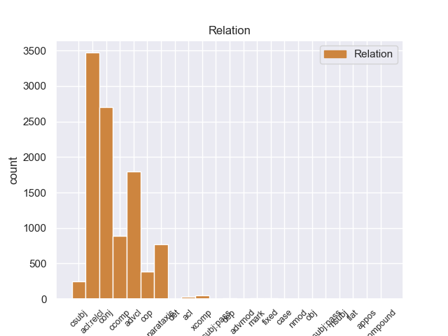
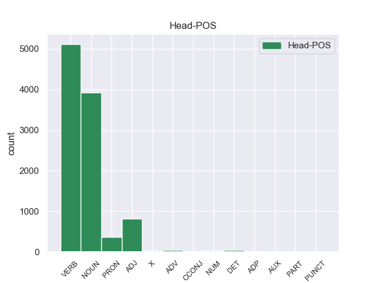
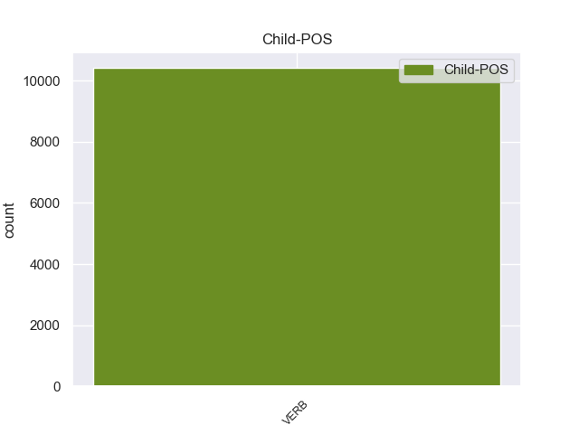

Distribution of features within this leaf



Morphosyntax Rules sorted by frequency.
- When the dependent token is the relative clause modifier(acl:relcl) of the head token, and the head token is NOUN and the dependent token is VERB, the Tense needs to be Pres.
1 Jazmin _ _ _ _ 0 _ _ _
2 es _ _ _ _ 0 _ _ _
3 todo _ _ _ _ 0 _ _ _
4 lo _ _ _ _ 0 _ _ _
5 contrario _ _ _ _ 0 _ _ _
6 , _ _ _ _ 0 _ _ _
7 es _ _ _ _ 0 _ _ _
8 tímida _ _ _ _ 0 _ _ _
9 y _ _ _ _ 0 _ _ _
10 callada _ _ _ _ 0 _ _ _
11 , _ _ _ _ 0 _ _ _
12 pero _ _ _ _ 0 _ _ _
13 siempre _ _ _ _ 0 _ _ _
14 es _ _ _ _ 0 _ _ _
15 arrastrada _ _ _ _ 0 _ _ _
16 por _ _ _ _ 0 _ _ _
17 las _ _ _ _ 0 _ _ _
18 locuras locura NOUN _ Gender=Fem|Number=Plur 0 _ _ _
19 y _ _ _ _ 0 _ _ _
20 travesuras _ _ _ _ 0 _ _ _
21 que _ _ _ _ 0 _ _ _
22 inventa inventar VERB _ Mood=Ind|Number=Sing|Person=3|Tense=Pres|VerbForm=Fin 18 acl:relcl _ _
23 Alma _ _ _ _ 0 _ _ _
24 . _ _ _ _ 0 _ _ _
1 Esta _ _ _ _ 0 _ _ _
2 compra _ _ _ _ 0 _ _ _
3 pone poner VERB _ Mood=Ind|Number=Sing|Person=3|Tense=Pres|VerbForm=Fin 0 _ _ _
4 fin _ _ _ _ 0 _ _ _
5 a _ _ _ _ 0 _ _ _
6 meses _ _ _ _ 0 _ _ _
7 de _ _ _ _ 0 _ _ _
8 negociaciones _ _ _ _ 0 _ _ _
9 y _ _ _ _ 0 _ _ _
10 refuerza reforzar VERB _ Mood=Ind|Number=Sing|Person=3|Tense=Pres|VerbForm=Fin 3 conj _ _
11 la _ _ _ _ 0 _ _ _
12 estrategia _ _ _ _ 0 _ _ _
13 de _ _ _ _ 0 _ _ _
14 crecimiento _ _ _ _ 0 _ _ _
15 implantada _ _ _ _ 0 _ _ _
16 por _ _ _ _ 0 _ _ _
17 la _ _ _ _ 0 _ _ _
18 dirección _ _ _ _ 0 _ _ _
19 de _ _ _ _ 0 _ _ _
20 el _ _ _ _ 0 _ _ _
21 grupo _ _ _ _ 0 _ _ _
22 además _ _ _ _ 0 _ _ _
23 de _ _ _ _ 0 _ _ _
24 añadir _ _ _ _ 0 _ _ _
25 un _ _ _ _ 0 _ _ _
26 complejo _ _ _ _ 0 _ _ _
27 de _ _ _ _ 0 _ _ _
28 calidad _ _ _ _ 0 _ _ _
29 superior _ _ _ _ 0 _ _ _
30 a _ _ _ _ 0 _ _ _
31 su _ _ _ _ 0 _ _ _
32 oferta _ _ _ _ 0 _ _ _
33 . _ _ _ _ 0 _ _ _
1 Para _ _ _ _ 0 _ _ _
2 poder _ _ _ _ 0 _ _ _
3 estudiar _ _ _ _ 0 _ _ _
4 los _ _ _ _ 0 _ _ _
5 mejor _ _ _ _ 0 _ _ _
6 , _ _ _ _ 0 _ _ _
7 Ghazali _ _ _ _ 0 _ _ _
8 introdujo introducir VERB _ Mood=Ind|Number=Sing|Person=3|Tense=Past|VerbForm=Fin 0 _ _ _
9 varios _ _ _ _ 0 _ _ _
10 peces _ _ _ _ 0 _ _ _
11 en _ _ _ _ 0 _ _ _
12 un _ _ _ _ 0 _ _ _
13 tanque _ _ _ _ 0 _ _ _
14 y _ _ _ _ 0 _ _ _
15 , _ _ _ _ 0 _ _ _
16 tras _ _ _ _ 0 _ _ _
17 varias _ _ _ _ 0 _ _ _
18 semanas _ _ _ _ 0 _ _ _
19 de _ _ _ _ 0 _ _ _
20 aclimatación _ _ _ _ 0 _ _ _
21 , _ _ _ _ 0 _ _ _
22 comenzó _ _ _ _ 0 _ _ _
23 a _ _ _ _ 0 _ _ _
24 grabar _ _ _ _ 0 _ _ _
25 sus _ _ _ _ 0 _ _ _
26 sonidos _ _ _ _ 0 _ _ _
27 , _ _ _ _ 0 _ _ _
28 según _ _ _ _ 0 _ _ _
29 recoge recoger VERB _ Mood=Ind|Number=Sing|Person=3|Tense=Pres|VerbForm=Fin 8 advcl _ _
30 el _ _ _ _ 0 _ _ _
31 periódico _ _ _ _ 0 _ _ _
32 New _ _ _ _ 0 _ _ _
33 Zealand _ _ _ _ 0 _ _ _
34 Herald _ _ _ _ 0 _ _ _
35 . _ _ _ _ 0 _ _ _
1 " _ _ _ _ 0 _ _ _
2 Tenemos tener VERB _ Mood=Ind|Number=Plur|Person=1|Tense=Pres|VerbForm=Fin 79 ccomp _ _
3 todo _ _ _ _ 0 _ _ _
4 listo _ _ _ _ 0 _ _ _
5 , _ _ _ _ 0 _ _ _
6 la _ _ _ _ 0 _ _ _
7 venta _ _ _ _ 0 _ _ _
8 de _ _ _ _ 0 _ _ _
9 boletos _ _ _ _ 0 _ _ _
10 será _ _ _ _ 0 _ _ _
11 a _ _ _ _ 0 _ _ _
12 partir _ _ _ _ 0 _ _ _
13 de _ _ _ _ 0 _ _ _
14 mañana _ _ _ _ 0 _ _ _
15 de _ _ _ _ 0 _ _ _
16 8 _ _ _ _ 0 _ _ _
17 am _ _ _ _ 0 _ _ _
18 a _ _ _ _ 0 _ _ _
19 3 _ _ _ _ 0 _ _ _
20 pm _ _ _ _ 0 _ _ _
21 , _ _ _ _ 0 _ _ _
22 la _ _ _ _ 0 _ _ _
23 afición _ _ _ _ 0 _ _ _
24 de _ _ _ _ 0 _ _ _
25 el _ _ _ _ 0 _ _ _
26 Real _ _ _ _ 0 _ _ _
27 España _ _ _ _ 0 _ _ _
28 podrá _ _ _ _ 0 _ _ _
29 comprar _ _ _ _ 0 _ _ _
30 en _ _ _ _ 0 _ _ _
31 el _ _ _ _ 0 _ _ _
32 Banco _ _ _ _ 0 _ _ _
33 Continental _ _ _ _ 0 _ _ _
34 , _ _ _ _ 0 _ _ _
35 frente _ _ _ _ 0 _ _ _
36 a _ _ _ _ 0 _ _ _
37 el _ _ _ _ 0 _ _ _
38 estadio _ _ _ _ 0 _ _ _
39 Morazán _ _ _ _ 0 _ _ _
40 , _ _ _ _ 0 _ _ _
41 se _ _ _ _ 0 _ _ _
42 han _ _ _ _ 0 _ _ _
43 puesto _ _ _ _ 0 _ _ _
44 a _ _ _ _ 0 _ _ _
45 la _ _ _ _ 0 _ _ _
46 venta _ _ _ _ 0 _ _ _
47 800 _ _ _ _ 0 _ _ _
48 boletos _ _ _ _ 0 _ _ _
49 , _ _ _ _ 0 _ _ _
50 500 _ _ _ _ 0 _ _ _
51 en _ _ _ _ 0 _ _ _
52 sol _ _ _ _ 0 _ _ _
53 y _ _ _ _ 0 _ _ _
54 300 _ _ _ _ 0 _ _ _
55 en _ _ _ _ 0 _ _ _
56 preferencia _ _ _ _ 0 _ _ _
57 , _ _ _ _ 0 _ _ _
58 la _ _ _ _ 0 _ _ _
59 boletería _ _ _ _ 0 _ _ _
60 de _ _ _ _ 0 _ _ _
61 el _ _ _ _ 0 _ _ _
62 España _ _ _ _ 0 _ _ _
63 está _ _ _ _ 0 _ _ _
64 ya _ _ _ _ 0 _ _ _
65 identificada _ _ _ _ 0 _ _ _
66 con _ _ _ _ 0 _ _ _
67 el _ _ _ _ 0 _ _ _
68 escudo _ _ _ _ 0 _ _ _
69 de _ _ _ _ 0 _ _ _
70 el _ _ _ _ 0 _ _ _
71 equipo _ _ _ _ 0 _ _ _
72 y _ _ _ _ 0 _ _ _
73 con _ _ _ _ 0 _ _ _
74 el _ _ _ _ 0 _ _ _
75 color _ _ _ _ 0 _ _ _
76 amarillo _ _ _ _ 0 _ _ _
77 " _ _ _ _ 0 _ _ _
78 , _ _ _ _ 0 _ _ _
79 comentó comentar VERB _ Mood=Ind|Number=Sing|Person=3|Tense=Past|VerbForm=Fin 0 _ _ _
80 Rolin _ _ _ _ 0 _ _ _
81 . _ _ _ _ 0 _ _ _
1 Una _ _ _ _ 0 _ _ _
2 vez _ _ _ _ 0 _ _ _
3 que _ _ _ _ 0 _ _ _
4 el _ _ _ _ 0 _ _ _
5 Hijo _ _ _ _ 0 _ _ _
6 de _ _ _ _ 0 _ _ _
7 Krypton _ _ _ _ 0 _ _ _
8 suelta suelto VERB _ Mood=Ind|Number=Sing|Person=3|Tense=Pres|VerbForm=Fin 0 _ _ _
9 el _ _ _ _ 0 _ _ _
10 misil _ _ _ _ 0 _ _ _
11 , _ _ _ _ 0 _ _ _
12 este _ _ _ _ 0 _ _ _
13 intenta intentar VERB _ Mood=Ind|Number=Sing|Person=3|Tense=Pres|VerbForm=Fin 8 parataxis _ _
14 huir _ _ _ _ 0 _ _ _
15 de _ _ _ _ 0 _ _ _
16 el _ _ _ _ 0 _ _ _
17 lugar _ _ _ _ 0 _ _ _
18 pero _ _ _ _ 0 _ _ _
19 es _ _ _ _ 0 _ _ _
20 atrapado _ _ _ _ 0 _ _ _
21 en _ _ _ _ 0 _ _ _
22 la _ _ _ _ 0 _ _ _
23 explosión _ _ _ _ 0 _ _ _
24 . _ _ _ _ 0 _ _ _
1 Además _ _ _ _ 0 _ _ _
2 de _ _ _ _ 0 _ _ _
3 tratar _ _ _ _ 0 _ _ _
4 se _ _ _ _ 0 _ _ _
5 de _ _ _ _ 0 _ _ _
6 un _ _ _ _ 0 _ _ _
7 lugar _ _ _ _ 0 _ _ _
8 lleno _ _ _ _ 0 _ _ _
9 de _ _ _ _ 0 _ _ _
10 encanto _ _ _ _ 0 _ _ _
11 y _ _ _ _ 0 _ _ _
12 caracter _ _ _ _ 0 _ _ _
13 que _ _ _ _ 0 _ _ _
14 ha _ _ _ _ 0 _ _ _
15 sabido _ _ _ _ 0 _ _ _
16 respetar _ _ _ _ 0 _ _ _
17 la _ _ _ _ 0 _ _ _
18 historia _ _ _ _ 0 _ _ _
19 de _ _ _ _ 0 _ _ _
20 esta _ _ _ _ 0 _ _ _
21 antigua _ _ _ _ 0 _ _ _
22 drogeria _ _ _ _ 0 _ _ _
23 , _ _ _ _ 0 _ _ _
24 dispone _ _ _ _ 0 _ _ _
25 de _ _ _ _ 0 _ _ _
26 una _ _ _ _ 0 _ _ _
27 " _ _ _ _ 0 _ _ _
28 Viatjoteca _ _ _ _ 0 _ _ _
29 " _ _ _ _ 0 _ _ _
30 , _ _ _ _ 0 _ _ _
31 biblioteca _ _ _ _ 0 _ _ _
32 sobre _ _ _ _ 0 _ _ _
33 viajes _ _ _ _ 0 _ _ _
34 con _ _ _ _ 0 _ _ _
35 guias _ _ _ _ 0 _ _ _
36 , _ _ _ _ 0 _ _ _
37 mapas _ _ _ _ 0 _ _ _
38 y _ _ _ _ 0 _ _ _
39 libros _ _ _ _ 0 _ _ _
40 para _ _ _ _ 0 _ _ _
41 los él PRON _ Case=Acc|Gender=Masc|Number=Plur|Person=3|PrepCase=Npr|PronType=Prs 0 _ _ _
42 que _ _ _ _ 0 _ _ _
43 no _ _ _ _ 0 _ _ _
44 se _ _ _ _ 0 _ _ _
45 conforman conformar VERB _ Mood=Ind|Number=Plur|Person=3|Tense=Pres|VerbForm=Fin 41 acl:relcl _ _
46 con _ _ _ _ 0 _ _ _
47 quedar _ _ _ _ 0 _ _ _
48 se _ _ _ _ 0 _ _ _
49 en _ _ _ _ 0 _ _ _
50 casita _ _ _ _ 0 _ _ _
51 . _ _ _ _ 0 _ _ _
1 Es _ _ _ _ 0 _ _ _
2 endémica endémica ADJ _ Gender=Fem|Number=Sing 0 _ _ _
3 de _ _ _ _ 0 _ _ _
4 Indonesia _ _ _ _ 0 _ _ _
5 , _ _ _ _ 0 _ _ _
6 sólo _ _ _ _ 0 _ _ _
7 se _ _ _ _ 0 _ _ _
8 conoce conocer VERB _ Mood=Ind|Number=Sing|Person=3|Tense=Pres|VerbForm=Fin 2 conj _ _
9 en _ _ _ _ 0 _ _ _
10 el _ _ _ _ 0 _ _ _
11 norte _ _ _ _ 0 _ _ _
12 de _ _ _ _ 0 _ _ _
13 Sumatra _ _ _ _ 0 _ _ _
14 . _ _ _ _ 0 _ _ _
1 En _ _ _ _ 0 _ _ _
2 este _ _ _ _ 0 _ _ _
3 poemario _ _ _ _ 0 _ _ _
4 místico _ _ _ _ 0 _ _ _
5 y _ _ _ _ 0 _ _ _
6 nocturno _ _ _ _ 0 _ _ _
7 se _ _ _ _ 0 _ _ _
8 canta _ _ _ _ 0 _ _ _
9 a _ _ _ _ 0 _ _ _
10 la _ _ _ _ 0 _ _ _
11 muerte _ _ _ _ 0 _ _ _
12 y _ _ _ _ 0 _ _ _
13 se _ _ _ _ 0 _ _ _
14 identifica _ _ _ _ 0 _ _ _
15 a _ _ _ _ 0 _ _ _
16 la _ _ _ _ 0 _ _ _
17 amada _ _ _ _ 0 _ _ _
18 con _ _ _ _ 0 _ _ _
19 los _ _ _ _ 0 _ _ _
20 misterios _ _ _ _ 0 _ _ _
21 de _ _ _ _ 0 _ _ _
22 el _ _ _ _ 0 _ _ _
23 cristianismo _ _ _ _ 0 _ _ _
24 , _ _ _ _ 0 _ _ _
25 y _ _ _ _ 0 _ _ _
26 el _ _ _ _ 0 _ _ _
27 misticismo _ _ _ _ 0 _ _ _
28 de _ _ _ _ 0 _ _ _
29 el _ _ _ _ 0 _ _ _
30 viaje _ _ _ _ 0 _ _ _
31 de _ _ _ _ 0 _ _ _
32 la _ _ _ _ 0 _ _ _
33 prometida _ _ _ _ 0 _ _ _
34 muerta _ _ _ _ 0 _ _ _
35 por _ _ _ _ 0 _ _ _
36 las _ _ _ _ 0 _ _ _
37 regiones _ _ _ _ 0 _ _ _
38 de _ _ _ _ 0 _ _ _
39 la _ _ _ _ 0 _ _ _
40 oscuridad _ _ _ _ 0 _ _ _
41 se _ _ _ _ 0 _ _ _
42 hace hacer VERB _ Mood=Ind|Number=Sing|Person=3|Tense=Pres|VerbForm=Fin 43 cop _ _
43 patente patente ADJ _ Number=Sing 0 _ _ _
44 a _ _ _ _ 0 _ _ _
45 el _ _ _ _ 0 _ _ _
46 fundir _ _ _ _ 0 _ _ _
47 la _ _ _ _ 0 _ _ _
48 persona _ _ _ _ 0 _ _ _
49 de _ _ _ _ 0 _ _ _
50 la _ _ _ _ 0 _ _ _
51 amada _ _ _ _ 0 _ _ _
52 con _ _ _ _ 0 _ _ _
53 las _ _ _ _ 0 _ _ _
54 personas _ _ _ _ 0 _ _ _
55 de _ _ _ _ 0 _ _ _
56 la _ _ _ _ 0 _ _ _
57 Trinidad _ _ _ _ 0 _ _ _
58 cristiana _ _ _ _ 0 _ _ _
59 . _ _ _ _ 0 _ _ _
1 El _ _ _ _ 0 _ _ _
2 ministro _ _ _ _ 0 _ _ _
3 británico _ _ _ _ 0 _ _ _
4 de _ _ _ _ 0 _ _ _
5 Defensa _ _ _ _ 0 _ _ _
6 , _ _ _ _ 0 _ _ _
7 Liam _ _ _ _ 0 _ _ _
8 Fox _ _ _ _ 0 _ _ _
9 , _ _ _ _ 0 _ _ _
10 consideró _ _ _ _ 0 _ _ _
11 que _ _ _ _ 0 _ _ _
12 el _ _ _ _ 0 _ _ _
13 avance _ _ _ _ 0 _ _ _
14 rebelde _ _ _ _ 0 _ _ _
15 puede _ _ _ _ 0 _ _ _
16 despejar _ _ _ _ 0 _ _ _
17 el _ _ _ _ 0 _ _ _
18 camino camino NOUN _ Gender=Masc|Number=Sing 0 _ _ _
19 para _ _ _ _ 0 _ _ _
20 que _ _ _ _ 0 _ _ _
21 los _ _ _ _ 0 _ _ _
22 insurgentes _ _ _ _ 0 _ _ _
23 se _ _ _ _ 0 _ _ _
24 hagan hacer VERB _ Mood=Sub|Number=Plur|Person=3|Tense=Pres|VerbForm=Fin 18 advcl _ _
25 con _ _ _ _ 0 _ _ _
26 el _ _ _ _ 0 _ _ _
27 control _ _ _ _ 0 _ _ _
28 de _ _ _ _ 0 _ _ _
29 los _ _ _ _ 0 _ _ _
30 puntos _ _ _ _ 0 _ _ _
31 de _ _ _ _ 0 _ _ _
32 exportación _ _ _ _ 0 _ _ _
33 de _ _ _ _ 0 _ _ _
34 petróleo _ _ _ _ 0 _ _ _
35 de _ _ _ _ 0 _ _ _
36 Libia _ _ _ _ 0 _ _ _
37 , _ _ _ _ 0 _ _ _
38 una _ _ _ _ 0 _ _ _
39 situación _ _ _ _ 0 _ _ _
40 que _ _ _ _ 0 _ _ _
41 puede _ _ _ _ 0 _ _ _
42 cambiar _ _ _ _ 0 _ _ _
43 la _ _ _ _ 0 _ _ _
44 " _ _ _ _ 0 _ _ _
45 dinámica _ _ _ _ 0 _ _ _
46 " _ _ _ _ 0 _ _ _
47 de _ _ _ _ 0 _ _ _
48 el _ _ _ _ 0 _ _ _
49 conflicto _ _ _ _ 0 _ _ _
50 . _ _ _ _ 0 _ _ _
1 Esta _ _ _ _ 0 _ _ _
2 República _ _ _ _ 0 _ _ _
3 es _ _ _ _ 0 _ _ _
4 un _ _ _ _ 0 _ _ _
5 Estado estado NOUN _ _ 0 _ _ _
6 internacionalmente _ _ _ _ 0 _ _ _
7 reconocido _ _ _ _ 0 _ _ _
8 , _ _ _ _ 0 _ _ _
9 pero _ _ _ _ 0 _ _ _
10 sólo _ _ _ _ 0 _ _ _
11 controla controlar VERB _ Mood=Ind|Number=Sing|Person=3|Tense=Pres|VerbForm=Fin 5 conj _ _
12 los _ _ _ _ 0 _ _ _
13 dos _ _ _ _ 0 _ _ _
14 tercios _ _ _ _ 0 _ _ _
15 de _ _ _ _ 0 _ _ _
16 el _ _ _ _ 0 _ _ _
17 sur _ _ _ _ 0 _ _ _
18 de _ _ _ _ 0 _ _ _
19 la _ _ _ _ 0 _ _ _
20 isla _ _ _ _ 0 _ _ _
21 . _ _ _ _ 0 _ _ _
1 La _ _ _ _ 0 _ _ _
2 característica característica NOUN _ Gender=Fem|Number=Sing 0 _ _ _
3 definitoria _ _ _ _ 0 _ _ _
4 de _ _ _ _ 0 _ _ _
5 la _ _ _ _ 0 _ _ _
6 isotermia _ _ _ _ 0 _ _ _
7 es _ _ _ _ 0 _ _ _
8 que _ _ _ _ 0 _ _ _
9 la _ _ _ _ 0 _ _ _
10 variación _ _ _ _ 0 _ _ _
11 térmica _ _ _ _ 0 _ _ _
12 de _ _ _ _ 0 _ _ _
13 las _ _ _ _ 0 _ _ _
14 temperaturas _ _ _ _ 0 _ _ _
15 medias _ _ _ _ 0 _ _ _
16 de _ _ _ _ 0 _ _ _
17 todos _ _ _ _ 0 _ _ _
18 los _ _ _ _ 0 _ _ _
19 meses _ _ _ _ 0 _ _ _
20 de _ _ _ _ 0 _ _ _
21 el _ _ _ _ 0 _ _ _
22 año _ _ _ _ 0 _ _ _
23 no _ _ _ _ 0 _ _ _
24 supera _ _ _ _ 0 _ _ _
25 los _ _ _ _ 0 _ _ _
26 1 _ _ _ _ 0 _ _ _
27 º _ _ _ _ 0 _ _ _
28 3 _ _ _ _ 0 _ _ _
29 º _ _ _ _ 0 _ _ _
30 C. _ _ _ _ 0 _ _ _
31 Se _ _ _ _ 0 _ _ _
32 le _ _ _ _ 0 _ _ _
33 suele soler VERB _ Mood=Ind|Number=Sing|Person=3|Tense=Pres|VerbForm=Fin 2 parataxis _ _
34 denominar _ _ _ _ 0 _ _ _
35 " _ _ _ _ 0 _ _ _
36 la _ _ _ _ 0 _ _ _
37 eterna _ _ _ _ 0 _ _ _
38 primavera _ _ _ _ 0 _ _ _
39 " _ _ _ _ 0 _ _ _
40 . _ _ _ _ 0 _ _ _
1 Así _ _ _ _ 0 _ _ _
2 , _ _ _ _ 0 _ _ _
3 si _ _ _ _ 0 _ _ _
4 por _ _ _ _ 0 _ _ _
5 ejemplo _ _ _ _ 0 _ _ _
6 queremos querer VERB _ Mood=Ind|Number=Plur|Person=1|Tense=Pres|VerbForm=Fin 26 advcl _ _
7 valorar _ _ _ _ 0 _ _ _
8 la _ _ _ _ 0 _ _ _
9 eficacia _ _ _ _ 0 _ _ _
10 de _ _ _ _ 0 _ _ _
11 un _ _ _ _ 0 _ _ _
12 anuncio _ _ _ _ 0 _ _ _
13 televisivo _ _ _ _ 0 _ _ _
14 para _ _ _ _ 0 _ _ _
15 evitar _ _ _ _ 0 _ _ _
16 los _ _ _ _ 0 _ _ _
17 accidentes _ _ _ _ 0 _ _ _
18 de _ _ _ _ 0 _ _ _
19 tráfico _ _ _ _ 0 _ _ _
20 , _ _ _ _ 0 _ _ _
21 los _ _ _ _ 0 _ _ _
22 factores _ _ _ _ 0 _ _ _
23 pronósticos _ _ _ _ 0 _ _ _
24 serían _ _ _ _ 0 _ _ _
25 muy _ _ _ _ 0 _ _ _
26 variados variados ADJ _ Gender=Masc|Number=Plur|VerbForm=Part 0 _ _ _
27 ( _ _ _ _ 0 _ _ _
28 edad _ _ _ _ 0 _ _ _
29 , _ _ _ _ 0 _ _ _
30 sexo _ _ _ _ 0 _ _ _
31 , _ _ _ _ 0 _ _ _
32 raza _ _ _ _ 0 _ _ _
33 , _ _ _ _ 0 _ _ _
34 grupo _ _ _ _ 0 _ _ _
35 cultural _ _ _ _ 0 _ _ _
36 , _ _ _ _ 0 _ _ _
37 conducir _ _ _ _ 0 _ _ _
38 con _ _ _ _ 0 _ _ _
39 o _ _ _ _ 0 _ _ _
40 sin _ _ _ _ 0 _ _ _
41 licencia _ _ _ _ 0 _ _ _
42 , _ _ _ _ 0 _ _ _
43 etc. _ _ _ _ 0 _ _ _
44 ) _ _ _ _ 0 _ _ _
45 a _ _ _ _ 0 _ _ _
46 el _ _ _ _ 0 _ _ _
47 igual _ _ _ _ 0 _ _ _
48 que _ _ _ _ 0 _ _ _
49 los _ _ _ _ 0 _ _ _
50 gradientes _ _ _ _ 0 _ _ _
51 presentes _ _ _ _ 0 _ _ _
52 ( _ _ _ _ 0 _ _ _
53 antigüedad _ _ _ _ 0 _ _ _
54 en _ _ _ _ 0 _ _ _
55 la _ _ _ _ 0 _ _ _
56 licencia _ _ _ _ 0 _ _ _
57 , _ _ _ _ 0 _ _ _
58 nivel _ _ _ _ 0 _ _ _
59 cultural _ _ _ _ 0 _ _ _
60 , _ _ _ _ 0 _ _ _
61 duración _ _ _ _ 0 _ _ _
62 de _ _ _ _ 0 _ _ _
63 la _ _ _ _ 0 _ _ _
64 conducción _ _ _ _ 0 _ _ _
65 , _ _ _ _ 0 _ _ _
66 etc. _ _ _ _ 0 _ _ _
67 ) _ _ _ _ 0 _ _ _
68 . _ _ _ _ 0 _ _ _
1 Da _ _ _ _ 0 _ _ _
2 la _ _ _ _ 0 _ _ _
3 sensación _ _ _ _ 0 _ _ _
4 de _ _ _ _ 0 _ _ _
5 que _ _ _ _ 0 _ _ _
6 no _ _ _ _ 0 _ _ _
7 les _ _ _ _ 0 _ _ _
8 gusta gustar VERB _ Mood=Ind|Number=Sing|Person=3|Tense=Pres|VerbForm=Fin 0 _ _ _
9 que _ _ _ _ 0 _ _ _
10 les _ _ _ _ 0 _ _ _
11 compliquen complicar VERB _ Mood=Sub|Number=Plur|Person=3|Tense=Pres|VerbForm=Fin 8 csubj _ _
12 la _ _ _ _ 0 _ _ _
13 mañana _ _ _ _ 0 _ _ _
14 . _ _ _ _ 0 _ _ _
1 Son _ _ _ _ 0 _ _ _
2 muy _ _ _ _ 0 _ _ _
3 cumplidos cumplido ADJ _ Gender=Masc|Number=Plur|VerbForm=Part 0 _ _ _
4 con _ _ _ _ 0 _ _ _
5 las _ _ _ _ 0 _ _ _
6 entregas _ _ _ _ 0 _ _ _
7 , _ _ _ _ 0 _ _ _
8 tienen tener VERB _ Mood=Ind|Number=Plur|Person=3|Tense=Pres|VerbForm=Fin 3 parataxis _ _
9 una _ _ _ _ 0 _ _ _
10 gran _ _ _ _ 0 _ _ _
11 variedad _ _ _ _ 0 _ _ _
12 de _ _ _ _ 0 _ _ _
13 ramos _ _ _ _ 0 _ _ _
14 y _ _ _ _ 0 _ _ _
15 arreglos _ _ _ _ 0 _ _ _
16 florales _ _ _ _ 0 _ _ _
17 , _ _ _ _ 0 _ _ _
18 regalos _ _ _ _ 0 _ _ _
19 , _ _ _ _ 0 _ _ _
20 detalles _ _ _ _ 0 _ _ _
21 , _ _ _ _ 0 _ _ _
22 sorpresas _ _ _ _ 0 _ _ _
23 y _ _ _ _ 0 _ _ _
24 decoración _ _ _ _ 0 _ _ _
25 para _ _ _ _ 0 _ _ _
26 todo _ _ _ _ 0 _ _ _
27 tipo _ _ _ _ 0 _ _ _
28 de _ _ _ _ 0 _ _ _
29 eventos _ _ _ _ 0 _ _ _
30 y _ _ _ _ 0 _ _ _
31 toda _ _ _ _ 0 _ _ _
32 ocasión _ _ _ _ 0 _ _ _
33 . _ _ _ _ 0 _ _ _
1 Pero _ _ _ _ 0 _ _ _
2 no _ _ _ _ 0 _ _ _
3 escogieron _ _ _ _ 0 _ _ _
4 por _ _ _ _ 0 _ _ _
5 irrumpir _ _ _ _ 0 _ _ _
6 en _ _ _ _ 0 _ _ _
7 las _ _ _ _ 0 _ _ _
8 oficinas _ _ _ _ 0 _ _ _
9 de _ _ _ _ 0 _ _ _
10 la _ _ _ _ 0 _ _ _
11 Intendencia _ _ _ _ 0 _ _ _
12 , _ _ _ _ 0 _ _ _
13 que _ _ _ _ 0 _ _ _
14 seria seriar VERB _ Mood=Ind|Number=Sing|Person=3|Tense=Pres|VerbForm=Fin 16 cop _ _
15 el _ _ _ _ 0 _ _ _
16 escenario escenario NOUN _ Gender=Masc|Number=Sing 0 _ _ _
17 mas _ _ _ _ 0 _ _ _
18 adecuado _ _ _ _ 0 _ _ _
19 para _ _ _ _ 0 _ _ _
20 ventilar _ _ _ _ 0 _ _ _
21 sus _ _ _ _ 0 _ _ _
22 reclamos _ _ _ _ 0 _ _ _
23 . _ _ _ _ 0 _ _ _
1 Es _ _ _ _ 0 _ _ _
2 evidente evidente ADJ _ Number=Sing 0 _ _ _
3 que _ _ _ _ 0 _ _ _
4 no _ _ _ _ 0 _ _ _
5 se _ _ _ _ 0 _ _ _
6 cumplen cumplir VERB _ Mood=Ind|Number=Plur|Person=3|Tense=Pres|VerbForm=Fin 2 csubj _ _
7 las _ _ _ _ 0 _ _ _
8 normas _ _ _ _ 0 _ _ _
9 sanitarias _ _ _ _ 0 _ _ _
10 vigentes _ _ _ _ 0 _ _ _
11 . _ _ _ _ 0 _ _ _
1 La _ _ _ _ 0 _ _ _
2 característica característica NOUN _ Gender=Fem|Number=Sing 0 _ _ _
3 definitoria _ _ _ _ 0 _ _ _
4 de _ _ _ _ 0 _ _ _
5 la _ _ _ _ 0 _ _ _
6 isotermia _ _ _ _ 0 _ _ _
7 es _ _ _ _ 0 _ _ _
8 que _ _ _ _ 0 _ _ _
9 la _ _ _ _ 0 _ _ _
10 variación _ _ _ _ 0 _ _ _
11 térmica _ _ _ _ 0 _ _ _
12 de _ _ _ _ 0 _ _ _
13 las _ _ _ _ 0 _ _ _
14 temperaturas _ _ _ _ 0 _ _ _
15 medias _ _ _ _ 0 _ _ _
16 de _ _ _ _ 0 _ _ _
17 todos _ _ _ _ 0 _ _ _
18 los _ _ _ _ 0 _ _ _
19 meses _ _ _ _ 0 _ _ _
20 de _ _ _ _ 0 _ _ _
21 el _ _ _ _ 0 _ _ _
22 año _ _ _ _ 0 _ _ _
23 no _ _ _ _ 0 _ _ _
24 supera superar VERB _ Mood=Ind|Number=Sing|Person=3|Tense=Pres|VerbForm=Fin 2 csubj _ _
25 los _ _ _ _ 0 _ _ _
26 1 _ _ _ _ 0 _ _ _
27 º _ _ _ _ 0 _ _ _
28 3 _ _ _ _ 0 _ _ _
29 º _ _ _ _ 0 _ _ _
30 C. _ _ _ _ 0 _ _ _
31 Se _ _ _ _ 0 _ _ _
32 le _ _ _ _ 0 _ _ _
33 suele _ _ _ _ 0 _ _ _
34 denominar _ _ _ _ 0 _ _ _
35 " _ _ _ _ 0 _ _ _
36 la _ _ _ _ 0 _ _ _
37 eterna _ _ _ _ 0 _ _ _
38 primavera _ _ _ _ 0 _ _ _
39 " _ _ _ _ 0 _ _ _
40 . _ _ _ _ 0 _ _ _
1 En _ _ _ _ 0 _ _ _
2 cuanto _ _ _ _ 0 _ _ _
3 a _ _ _ _ 0 _ _ _
4 el _ _ _ _ 0 _ _ _
5 video _ _ _ _ 0 _ _ _
6 , _ _ _ _ 0 _ _ _
7 es _ _ _ _ 0 _ _ _
8 mucho _ _ _ _ 0 _ _ _
9 más _ _ _ _ 0 _ _ _
10 corto _ _ _ _ 0 _ _ _
11 y _ _ _ _ 0 _ _ _
12 años _ _ _ _ 0 _ _ _
13 luz _ _ _ _ 0 _ _ _
14 menos _ _ _ _ 0 _ _ _
15 elaborado _ _ _ _ 0 _ _ _
16 que _ _ _ _ 0 _ _ _
17 el el DET _ Definite=Def|Gender=Masc|Number=Sing|PronType=Art 0 _ _ _
18 que _ _ _ _ 0 _ _ _
19 te _ _ _ _ 0 _ _ _
20 enseñan _ _ _ _ 0 _ _ _
21 de _ _ _ _ 0 _ _ _
22 muestra _ _ _ _ 0 _ _ _
23 , _ _ _ _ 0 _ _ _
24 que _ _ _ _ 0 _ _ _
25 no _ _ _ _ 0 _ _ _
26 tiene tener VERB _ Mood=Ind|Number=Sing|Person=3|Tense=Pres|VerbForm=Fin 17 acl:relcl _ _
27 nada _ _ _ _ 0 _ _ _
28 que _ _ _ _ 0 _ _ _
29 ver _ _ _ _ 0 _ _ _
30 con _ _ _ _ 0 _ _ _
31 la _ _ _ _ 0 _ _ _
32 realidad _ _ _ _ 0 _ _ _
33 . _ _ _ _ 0 _ _ _
1 El _ _ _ _ 0 _ _ _
2 Santuario _ _ _ _ 0 _ _ _
3 de _ _ _ _ 0 _ _ _
4 Fauna _ _ _ _ 0 _ _ _
5 y _ _ _ _ 0 _ _ _
6 Flora _ _ _ _ 0 _ _ _
7 los _ _ _ _ 0 _ _ _
8 Colorados _ _ _ _ 0 _ _ _
9 es _ _ _ _ 0 _ _ _
10 una _ _ _ _ 0 _ _ _
11 pequeña _ _ _ _ 0 _ _ _
12 zona zona NOUN _ Gender=Fem|Number=Sing 0 _ _ _
13 protegida _ _ _ _ 0 _ _ _
14 de _ _ _ _ 0 _ _ _
15 el _ _ _ _ 0 _ _ _
16 norte _ _ _ _ 0 _ _ _
17 de _ _ _ _ 0 _ _ _
18 Colombia _ _ _ _ 0 _ _ _
19 , _ _ _ _ 0 _ _ _
20 pero _ _ _ _ 0 _ _ _
21 de _ _ _ _ 0 _ _ _
22 enorme _ _ _ _ 0 _ _ _
23 importancia _ _ _ _ 0 _ _ _
24 ecológica _ _ _ _ 0 _ _ _
25 ya _ _ _ _ 0 _ _ _
26 que _ _ _ _ 0 _ _ _
27 en _ _ _ _ 0 _ _ _
28 ella _ _ _ _ 0 _ _ _
29 se _ _ _ _ 0 _ _ _
30 protege proteger VERB _ Mood=Ind|Number=Sing|Person=3|Tense=Pres|VerbForm=Fin 12 ccomp _ _
31 uno _ _ _ _ 0 _ _ _
32 de _ _ _ _ 0 _ _ _
33 los _ _ _ _ 0 _ _ _
34 últimos _ _ _ _ 0 _ _ _
35 bosques _ _ _ _ 0 _ _ _
36 nativos _ _ _ _ 0 _ _ _
37 que _ _ _ _ 0 _ _ _
38 permanecen _ _ _ _ 0 _ _ _
39 aún _ _ _ _ 0 _ _ _
40 en _ _ _ _ 0 _ _ _
41 pie _ _ _ _ 0 _ _ _
42 de _ _ _ _ 0 _ _ _
43 la _ _ _ _ 0 _ _ _
44 serranía _ _ _ _ 0 _ _ _
45 conocida _ _ _ _ 0 _ _ _
46 como _ _ _ _ 0 _ _ _
47 Montes _ _ _ _ 0 _ _ _
48 de _ _ _ _ 0 _ _ _
49 María _ _ _ _ 0 _ _ _
50 , _ _ _ _ 0 _ _ _
51 además _ _ _ _ 0 _ _ _
52 de _ _ _ _ 0 _ _ _
53 una _ _ _ _ 0 _ _ _
54 multitud _ _ _ _ 0 _ _ _
55 de _ _ _ _ 0 _ _ _
56 monos _ _ _ _ 0 _ _ _
57 en _ _ _ _ 0 _ _ _
58 peligro _ _ _ _ 0 _ _ _
59 de _ _ _ _ 0 _ _ _
60 extinción _ _ _ _ 0 _ _ _
61 , _ _ _ _ 0 _ _ _
62 en _ _ _ _ 0 _ _ _
63 particular _ _ _ _ 0 _ _ _
64 de _ _ _ _ 0 _ _ _
65 la _ _ _ _ 0 _ _ _
66 especie _ _ _ _ 0 _ _ _
67 de _ _ _ _ 0 _ _ _
68 el _ _ _ _ 0 _ _ _
69 mono _ _ _ _ 0 _ _ _
70 colorado _ _ _ _ 0 _ _ _
71 , _ _ _ _ 0 _ _ _
72 de _ _ _ _ 0 _ _ _
73 el _ _ _ _ 0 _ _ _
74 cual _ _ _ _ 0 _ _ _
75 toma _ _ _ _ 0 _ _ _
76 su _ _ _ _ 0 _ _ _
77 nombre _ _ _ _ 0 _ _ _
78 . _ _ _ _ 0 _ _ _
1 La _ _ _ _ 0 _ _ _
2 elevada _ _ _ _ 0 _ _ _
3 eficiencia _ _ _ _ 0 _ _ _
4 de _ _ _ _ 0 _ _ _
5 este _ _ _ _ 0 _ _ _
6 mecanismo _ _ _ _ 0 _ _ _
7 ( _ _ _ _ 0 _ _ _
8 un _ _ _ _ 0 _ _ _
9 50 _ _ _ _ 0 _ _ _
10 % _ _ _ _ 0 _ _ _
11 superior _ _ _ _ 0 _ _ _
12 a _ _ _ _ 0 _ _ _
13 la _ _ _ _ 0 _ _ _
14 de _ _ _ _ 0 _ _ _
15 otras _ _ _ _ 0 _ _ _
16 tecnologías _ _ _ _ 0 _ _ _
17 de _ _ _ _ 0 _ _ _
18 depuración _ _ _ _ 0 _ _ _
19 convencionales _ _ _ _ 0 _ _ _
20 ) _ _ _ _ 0 _ _ _
21 permite _ _ _ _ 0 _ _ _
22 recuperar _ _ _ _ 0 _ _ _
23 hasta _ _ _ _ 0 _ _ _
24 240 _ _ _ _ 0 _ _ _
25 mc mc X _ _ 0 _ _ _
26 a _ _ _ _ 0 _ _ _
27 el _ _ _ _ 0 _ _ _
28 día _ _ _ _ 0 _ _ _
29 que _ _ _ _ 0 _ _ _
30 se _ _ _ _ 0 _ _ _
31 reutilizan reutilizar VERB _ Mood=Ind|Number=Plur|Person=3|Tense=Pres|VerbForm=Fin 25 acl:relcl _ _
32 en _ _ _ _ 0 _ _ _
33 el _ _ _ _ 0 _ _ _
34 mismo _ _ _ _ 0 _ _ _
35 Resort _ _ _ _ 0 _ _ _
36 . _ _ _ _ 0 _ _ _
1 Los _ _ _ _ 0 _ _ _
2 ejemplares _ _ _ _ 0 _ _ _
3 mas _ _ _ _ 0 _ _ _
4 grandes _ _ _ _ 0 _ _ _
5 llegaban _ _ _ _ 0 _ _ _
6 a _ _ _ _ 0 _ _ _
7 4 _ _ _ _ 0 _ _ _
8 metros _ _ _ _ 0 _ _ _
9 de _ _ _ _ 0 _ _ _
10 altura _ _ _ _ 0 _ _ _
11 y _ _ _ _ 0 _ _ _
12 un _ _ _ _ 0 _ _ _
13 peso _ _ _ _ 0 _ _ _
14 de _ _ _ _ 0 _ _ _
15 hasta _ _ _ _ 0 _ _ _
16 10 _ _ _ _ 0 _ _ _
17 toneladas _ _ _ _ 0 _ _ _
18 , _ _ _ _ 0 _ _ _
19 pero _ _ _ _ 0 _ _ _
20 lo él PRON _ Case=Acc|Gender=Masc|Number=Sing|Person=3|PrepCase=Npr|PronType=Prs 0 _ _ _
21 más _ _ _ _ 0 _ _ _
22 normal _ _ _ _ 0 _ _ _
23 era _ _ _ _ 0 _ _ _
24 que _ _ _ _ 0 _ _ _
25 midiesen midiesar VERB _ Mood=Sub|Number=Plur|Person=3|Tense=Pres|VerbForm=Fin 20 csubj _ _
26 poco _ _ _ _ 0 _ _ _
27 más _ _ _ _ 0 _ _ _
28 de _ _ _ _ 0 _ _ _
29 3 _ _ _ _ 0 _ _ _
30 metros _ _ _ _ 0 _ _ _
31 de _ _ _ _ 0 _ _ _
32 altura _ _ _ _ 0 _ _ _
33 y _ _ _ _ 0 _ _ _
34 pesaran _ _ _ _ 0 _ _ _
35 unas _ _ _ _ 0 _ _ _
36 6 _ _ _ _ 0 _ _ _
37 toneladas _ _ _ _ 0 _ _ _
38 . _ _ _ _ 0 _ _ _
1 En _ _ _ _ 0 _ _ _
2 el _ _ _ _ 0 _ _ _
3 transcurso _ _ _ _ 0 _ _ _
4 de _ _ _ _ 0 _ _ _
5 el _ _ _ _ 0 _ _ _
6 InterLiga _ _ _ _ 0 _ _ _
7 la _ _ _ _ 0 _ _ _
8 serie _ _ _ _ 0 _ _ _
9 que _ _ _ _ 0 _ _ _
10 se _ _ _ _ 0 _ _ _
11 repetio _ _ _ _ 0 _ _ _
12 en _ _ _ _ 0 _ _ _
13 más _ _ _ _ 0 _ _ _
14 ocasiones _ _ _ _ 0 _ _ _
15 es _ _ _ _ 0 _ _ _
16 la él PRON _ Case=Acc|Gender=Fem|Number=Sing|Person=3|PrepCase=Npr|PronType=Prs 0 _ _ _
17 de _ _ _ _ 0 _ _ _
18 ( _ _ _ _ 0 _ _ _
19 América _ _ _ _ 0 _ _ _
20 - _ _ _ _ 0 _ _ _
21 Atlas _ _ _ _ 0 _ _ _
22 ) _ _ _ _ 0 _ _ _
23 en _ _ _ _ 0 _ _ _
24 5 _ _ _ _ 0 _ _ _
25 ocasiones _ _ _ _ 0 _ _ _
26 y _ _ _ _ 0 _ _ _
27 tiene tener VERB _ Mood=Ind|Number=Sing|Person=3|Tense=Pres|VerbForm=Fin 16 conj _ _
28 la _ _ _ _ 0 _ _ _
29 particularidad _ _ _ _ 0 _ _ _
30 que _ _ _ _ 0 _ _ _
31 los _ _ _ _ 0 _ _ _
32 primeros _ _ _ _ 0 _ _ _
33 3 _ _ _ _ 0 _ _ _
34 encuentros _ _ _ _ 0 _ _ _
35 fueron _ _ _ _ 0 _ _ _
36 en _ _ _ _ 0 _ _ _
37 la _ _ _ _ 0 _ _ _
38 misma _ _ _ _ 0 _ _ _
39 edición _ _ _ _ 0 _ _ _
40 , _ _ _ _ 0 _ _ _
41 le _ _ _ _ 0 _ _ _
42 sigue _ _ _ _ 0 _ _ _
43 la _ _ _ _ 0 _ _ _
44 de _ _ _ _ 0 _ _ _
45 ( _ _ _ _ 0 _ _ _
46 América _ _ _ _ 0 _ _ _
47 - _ _ _ _ 0 _ _ _
48 Morelia _ _ _ _ 0 _ _ _
49 y _ _ _ _ 0 _ _ _
50 Morelia _ _ _ _ 0 _ _ _
51 - _ _ _ _ 0 _ _ _
52 Toluca _ _ _ _ 0 _ _ _
53 ) _ _ _ _ 0 _ _ _
54 con _ _ _ _ 0 _ _ _
55 3 _ _ _ _ 0 _ _ _
56 enfrentamientos _ _ _ _ 0 _ _ _
57 . _ _ _ _ 0 _ _ _
1 Clewiston _ _ _ _ 0 _ _ _
2 se _ _ _ _ 0 _ _ _
3 encuentra encontrar VERB _ Mood=Ind|Number=Sing|Person=3|Tense=Pres|VerbForm=Fin 4 cop _ _
4 ubicada ubicado VERB _ Gender=Fem|Number=Sing|VerbForm=Part 0 _ _ _
5 en _ _ _ _ 0 _ _ _
6 las _ _ _ _ 0 _ _ _
7 coordenadas _ _ _ _ 0 _ _ _
8 . _ _ _ _ 0 _ _ _
1 Iron _ _ _ _ 0 _ _ _
2 Maiden _ _ _ _ 0 _ _ _
3 , _ _ _ _ 0 _ _ _
4 quien _ _ _ _ 0 _ _ _
5 encabezó _ _ _ _ 0 _ _ _
6 el _ _ _ _ 0 _ _ _
7 tour _ _ _ _ 0 _ _ _
8 , _ _ _ _ 0 _ _ _
9 se _ _ _ _ 0 _ _ _
10 entrelazó _ _ _ _ 0 _ _ _
11 mucho _ _ _ _ 0 _ _ _
12 con _ _ _ _ 0 _ _ _
13 la _ _ _ _ 0 _ _ _
14 historia _ _ _ _ 0 _ _ _
15 de _ _ _ _ 0 _ _ _
16 Sanctuary _ _ _ _ 0 _ _ _
17 Records _ _ _ _ 0 _ _ _
18 ( _ _ _ _ 0 _ _ _
19 el _ _ _ _ 0 _ _ _
20 nombre _ _ _ _ 0 _ _ _
21 de _ _ _ _ 0 _ _ _
22 esa _ _ _ _ 0 _ _ _
23 discográfica discográfico NOUN _ Gender=Fem|Number=Sing 0 _ _ _
24 proviene provenir VERB _ Mood=Ind|Number=Sing|Person=3|Tense=Pres|VerbForm=Fin 23 acl _ _
25 de _ _ _ _ 0 _ _ _
26 la _ _ _ _ 0 _ _ _
27 canción _ _ _ _ 0 _ _ _
28 Sanctuary _ _ _ _ 0 _ _ _
29 ) _ _ _ _ 0 _ _ _
30 , _ _ _ _ 0 _ _ _
31 ahora _ _ _ _ 0 _ _ _
32 como _ _ _ _ 0 _ _ _
33 un _ _ _ _ 0 _ _ _
34 gran _ _ _ _ 0 _ _ _
35 sello _ _ _ _ 0 _ _ _
36 dicográfico _ _ _ _ 0 _ _ _
37 en _ _ _ _ 0 _ _ _
38 el _ _ _ _ 0 _ _ _
39 mundo _ _ _ _ 0 _ _ _
40 de _ _ _ _ 0 _ _ _
41 el _ _ _ _ 0 _ _ _
42 metal _ _ _ _ 0 _ _ _
43 . _ _ _ _ 0 _ _ _
1 Una _ _ _ _ 0 _ _ _
2 definición _ _ _ _ 0 _ _ _
3 menos _ _ _ _ 0 _ _ _
4 tradicional _ _ _ _ 0 _ _ _
5 y _ _ _ _ 0 _ _ _
6 más _ _ _ _ 0 _ _ _
7 actual _ _ _ _ 0 _ _ _
8 de _ _ _ _ 0 _ _ _
9 la _ _ _ _ 0 _ _ _
10 bibliografía _ _ _ _ 0 _ _ _
11 podría _ _ _ _ 0 _ _ _
12 ser _ _ _ _ 0 _ _ _
13 la él PRON _ Case=Acc|Gender=Fem|Number=Sing|Person=3|PrepCase=Npr|PronType=Prs 0 _ _ _
14 de _ _ _ _ 0 _ _ _
15 que _ _ _ _ 0 _ _ _
16 se _ _ _ _ 0 _ _ _
17 trata tratar VERB _ Mood=Ind|Number=Sing|Person=3|Tense=Pres|VerbForm=Fin 13 advcl _ _
18 de _ _ _ _ 0 _ _ _
19 una _ _ _ _ 0 _ _ _
20 disciplina _ _ _ _ 0 _ _ _
21 que _ _ _ _ 0 _ _ _
22 estudia _ _ _ _ 0 _ _ _
23 textos _ _ _ _ 0 _ _ _
24 bajo _ _ _ _ 0 _ _ _
25 las _ _ _ _ 0 _ _ _
26 formas _ _ _ _ 0 _ _ _
27 de _ _ _ _ 0 _ _ _
28 conocimiento _ _ _ _ 0 _ _ _
29 registradas _ _ _ _ 0 _ _ _
30 y _ _ _ _ 0 _ _ _
31 sus _ _ _ _ 0 _ _ _
32 procesos _ _ _ _ 0 _ _ _
33 de _ _ _ _ 0 _ _ _
34 transmisión _ _ _ _ 0 _ _ _
35 , _ _ _ _ 0 _ _ _
36 incluyendo _ _ _ _ 0 _ _ _
37 su _ _ _ _ 0 _ _ _
38 producción _ _ _ _ 0 _ _ _
39 y _ _ _ _ 0 _ _ _
40 recepción _ _ _ _ 0 _ _ _
41 . _ _ _ _ 0 _ _ _
1 En _ _ _ _ 0 _ _ _
2 1904 _ _ _ _ 0 _ _ _
3 la _ _ _ _ 0 _ _ _
4 Societa _ _ _ _ 0 _ _ _
5 Italiana _ _ _ _ 0 _ _ _
6 construye _ _ _ _ 0 _ _ _
7 un _ _ _ _ 0 _ _ _
8 palacete _ _ _ _ 0 _ _ _
9 de _ _ _ _ 0 _ _ _
10 estilo _ _ _ _ 0 _ _ _
11 neoclásico _ _ _ _ 0 _ _ _
12 en _ _ _ _ 0 _ _ _
13 donde _ _ _ _ 0 _ _ _
14 funcionaría _ _ _ _ 0 _ _ _
15 el _ _ _ _ 0 _ _ _
16 primer _ _ _ _ 0 _ _ _
17 cine _ _ _ _ 0 _ _ _
18 de _ _ _ _ 0 _ _ _
19 Merlo _ _ _ _ 0 _ _ _
20 cuando _ _ _ _ 0 _ _ _
21 llega _ _ _ _ 0 _ _ _
22 la _ _ _ _ 0 _ _ _
23 electricidad _ _ _ _ 0 _ _ _
24 a _ _ _ _ 0 _ _ _
25 el _ _ _ _ 0 _ _ _
26 pueblo _ _ _ _ 0 _ _ _
27 en _ _ _ _ 0 _ _ _
28 1915 _ _ _ _ 0 _ _ _
29 ( _ _ _ _ 0 _ _ _
30 en _ _ _ _ 0 _ _ _
31 1913 _ _ _ _ 0 _ _ _
32 se _ _ _ _ 0 _ _ _
33 había _ _ _ _ 0 _ _ _
34 inaugurado _ _ _ _ 0 _ _ _
35 la _ _ _ _ 0 _ _ _
36 primera _ _ _ _ 0 _ _ _
37 usina _ _ _ _ 0 _ _ _
38 eléctrica _ _ _ _ 0 _ _ _
39 en _ _ _ _ 0 _ _ _
40 donde donde ADV _ _ 0 _ _ _
41 hoy _ _ _ _ 0 _ _ _
42 se _ _ _ _ 0 _ _ _
43 ubica ubicar VERB _ Mood=Ind|Number=Sing|Person=3|Tense=Pres|VerbForm=Fin 40 acl:relcl _ _
44 el _ _ _ _ 0 _ _ _
45 edificio _ _ _ _ 0 _ _ _
46 de _ _ _ _ 0 _ _ _
47 EDENOR _ _ _ _ 0 _ _ _
48 ) _ _ _ _ 0 _ _ _
49 . _ _ _ _ 0 _ _ _
1 Muchos _ _ _ _ 0 _ _ _
2 críticos _ _ _ _ 0 _ _ _
3 modernos _ _ _ _ 0 _ _ _
4 han _ _ _ _ 0 _ _ _
5 señalado _ _ _ _ 0 _ _ _
6 que _ _ _ _ 0 _ _ _
7 el _ _ _ _ 0 _ _ _
8 juego _ _ _ _ 0 _ _ _
9 es _ _ _ _ 0 _ _ _
10 muy _ _ _ _ 0 _ _ _
11 lento _ _ _ _ 0 _ _ _
12 para _ _ _ _ 0 _ _ _
13 los _ _ _ _ 0 _ _ _
14 estándares _ _ _ _ 0 _ _ _
15 contemporáneos _ _ _ _ 0 _ _ _
16 e _ _ _ _ 0 _ _ _
17 implica _ _ _ _ 0 _ _ _
18 mucho _ _ _ _ 0 _ _ _
19 más más ADV _ Degree=Cmp 0 _ _ _
20 tiempo _ _ _ _ 0 _ _ _
21 en _ _ _ _ 0 _ _ _
22 la _ _ _ _ 0 _ _ _
23 búsqueda _ _ _ _ 0 _ _ _
24 de _ _ _ _ 0 _ _ _
25 batallas _ _ _ _ 0 _ _ _
26 aleatorias _ _ _ _ 0 _ _ _
27 para _ _ _ _ 0 _ _ _
28 incrementar _ _ _ _ 0 _ _ _
29 los _ _ _ _ 0 _ _ _
30 niveles _ _ _ _ 0 _ _ _
31 de _ _ _ _ 0 _ _ _
32 experiencia _ _ _ _ 0 _ _ _
33 y _ _ _ _ 0 _ _ _
34 dinero _ _ _ _ 0 _ _ _
35 que _ _ _ _ 0 _ _ _
36 el _ _ _ _ 0 _ _ _
37 que _ _ _ _ 0 _ _ _
38 se _ _ _ _ 0 _ _ _
39 dedica dedicar VERB _ Mood=Ind|Number=Sing|Person=3|Tense=Pres|VerbForm=Fin 19 advcl _ _
40 a _ _ _ _ 0 _ _ _
41 explorar _ _ _ _ 0 _ _ _
42 y _ _ _ _ 0 _ _ _
43 resolver _ _ _ _ 0 _ _ _
44 acertijos _ _ _ _ 0 _ _ _
45 . _ _ _ _ 0 _ _ _
1 Según _ _ _ _ 0 _ _ _
2 esto _ _ _ _ 0 _ _ _
3 , _ _ _ _ 0 _ _ _
4 a _ _ _ _ 0 _ _ _
5 pesar _ _ _ _ 0 _ _ _
6 de _ _ _ _ 0 _ _ _
7 su _ _ _ _ 0 _ _ _
8 sobreabundancia _ _ _ _ 0 _ _ _
9 óntica _ _ _ _ 0 _ _ _
10 , _ _ _ _ 0 _ _ _
11 esta _ _ _ _ 0 _ _ _
12 esencia esencia NOUN _ Gender=Fem|Number=Sing 0 _ _ _
13 ( _ _ _ _ 0 _ _ _
14 se _ _ _ _ 0 _ _ _
15 trata tratar VERB _ Mood=Ind|Number=Sing|Person=3|Tense=Pres|VerbForm=Fin 12 dep _ _
16 de _ _ _ _ 0 _ _ _
17 la _ _ _ _ 0 _ _ _
18 esencia _ _ _ _ 0 _ _ _
19 de _ _ _ _ 0 _ _ _
20 el _ _ _ _ 0 _ _ _
21 ente _ _ _ _ 0 _ _ _
22 infinito _ _ _ _ 0 _ _ _
23 ) _ _ _ _ 0 _ _ _
24 es _ _ _ _ 0 _ _ _
25 , _ _ _ _ 0 _ _ _
26 no _ _ _ _ 0 _ _ _
27 obstante _ _ _ _ 0 _ _ _
28 , _ _ _ _ 0 _ _ _
29 accesible _ _ _ _ 0 _ _ _
30 a _ _ _ _ 0 _ _ _
31 el _ _ _ _ 0 _ _ _
32 humano _ _ _ _ 0 _ _ _
33 entendimiento _ _ _ _ 0 _ _ _
34 , _ _ _ _ 0 _ _ _
35 a _ _ _ _ 0 _ _ _
36 el _ _ _ _ 0 _ _ _
37 menos _ _ _ _ 0 _ _ _
38 a _ _ _ _ 0 _ _ _
39 los _ _ _ _ 0 _ _ _
40 efectos _ _ _ _ 0 _ _ _
41 que _ _ _ _ 0 _ _ _
42 interesan _ _ _ _ 0 _ _ _
43 a _ _ _ _ 0 _ _ _
44 el _ _ _ _ 0 _ _ _
45 argumento _ _ _ _ 0 _ _ _
46 ontológico _ _ _ _ 0 _ _ _
47 . _ _ _ _ 0 _ _ _
1 Si _ _ _ _ 0 _ _ _
2 Rodríguez _ _ _ _ 0 _ _ _
3 Zapatero _ _ _ _ 0 _ _ _
4 fuera _ _ _ _ 0 _ _ _
5 un _ _ _ _ 0 _ _ _
6 auténtico _ _ _ _ 0 _ _ _
7 patriota _ _ _ _ 0 _ _ _
8 debería _ _ _ _ 0 _ _ _
9 liderar _ _ _ _ 0 _ _ _
10 , _ _ _ _ 0 _ _ _
11 gobernando _ _ _ _ 0 _ _ _
12 , _ _ _ _ 0 _ _ _
13 las _ _ _ _ 0 _ _ _
14 reformas _ _ _ _ 0 _ _ _
15 que _ _ _ _ 0 _ _ _
16 este _ _ _ _ 0 _ _ _
17 país _ _ _ _ 0 _ _ _
18 necesita _ _ _ _ 0 _ _ _
19 para _ _ _ _ 0 _ _ _
20 salir _ _ _ _ 0 _ _ _
21 de _ _ _ _ 0 _ _ _
22 la _ _ _ _ 0 _ _ _
23 crisis _ _ _ _ 0 _ _ _
24 , _ _ _ _ 0 _ _ _
25 por _ _ _ _ 0 _ _ _
26 muy _ _ _ _ 0 _ _ _
27 duras duro ADJ _ Gender=Fem|Number=Plur 0 _ _ _
28 y _ _ _ _ 0 _ _ _
29 muy _ _ _ _ 0 _ _ _
30 impopulares _ _ _ _ 0 _ _ _
31 que _ _ _ _ 0 _ _ _
32 estas _ _ _ _ 0 _ _ _
33 sean ser VERB _ Mood=Sub|Number=Plur|Person=3|Tense=Pres|VerbForm=Fin 27 acl:relcl _ SpaceAfter=No
34 . _ _ _ _ 0 _ _ _
1 Sam _ _ _ _ 0 _ _ _
2 les _ _ _ _ 0 _ _ _
3 dice _ _ _ _ 0 _ _ _
4 , _ _ _ _ 0 _ _ _
5 de _ _ _ _ 0 _ _ _
6 broma _ _ _ _ 0 _ _ _
7 , _ _ _ _ 0 _ _ _
8 que _ _ _ _ 0 _ _ _
9 Carly _ _ _ _ 0 _ _ _
10 y _ _ _ _ 0 _ _ _
11 Freddie _ _ _ _ 0 _ _ _
12 se _ _ _ _ 0 _ _ _
13 aman _ _ _ _ 0 _ _ _
14 , _ _ _ _ 0 _ _ _
15 provocando _ _ _ _ 0 _ _ _
16 que _ _ _ _ 0 _ _ _
17 los _ _ _ _ 0 _ _ _
18 fans _ _ _ _ 0 _ _ _
19 de _ _ _ _ 0 _ _ _
20 iCarly _ _ _ _ 0 _ _ _
21 inicien _ _ _ _ 0 _ _ _
22 una _ _ _ _ 0 _ _ _
23 descontrolada _ _ _ _ 0 _ _ _
24 guerra _ _ _ _ 0 _ _ _
25 de _ _ _ _ 0 _ _ _
26 fans _ _ _ _ 0 _ _ _
27 donde _ _ _ _ 0 _ _ _
28 discuten discutar VERB _ Mood=Ind|Number=Plur|Person=3|Tense=Pres|VerbForm=Fin 0 _ _ _
29 qué _ _ _ _ 0 _ _ _
30 relación _ _ _ _ 0 _ _ _
31 amorosa _ _ _ _ 0 _ _ _
32 existe existir VERB _ Mood=Ind|Number=Sing|Person=3|Tense=Pres|VerbForm=Fin 28 xcomp _ _
33 entre _ _ _ _ 0 _ _ _
34 los _ _ _ _ 0 _ _ _
35 chicos _ _ _ _ 0 _ _ _
36 : _ _ _ _ 0 _ _ _
37 si _ _ _ _ 0 _ _ _
38 Carly _ _ _ _ 0 _ _ _
39 y _ _ _ _ 0 _ _ _
40 Freddie _ _ _ _ 0 _ _ _
41 ( _ _ _ _ 0 _ _ _
42 Creddie _ _ _ _ 0 _ _ _
43 ) _ _ _ _ 0 _ _ _
44 o _ _ _ _ 0 _ _ _
45 Sam _ _ _ _ 0 _ _ _
46 y _ _ _ _ 0 _ _ _
47 Freddie _ _ _ _ 0 _ _ _
48 ( _ _ _ _ 0 _ _ _
49 Seddie _ _ _ _ 0 _ _ _
50 ) _ _ _ _ 0 _ _ _
51 tienen _ _ _ _ 0 _ _ _
52 una _ _ _ _ 0 _ _ _
53 relación _ _ _ _ 0 _ _ _
54 romántica _ _ _ _ 0 _ _ _
55 entre _ _ _ _ 0 _ _ _
56 sí _ _ _ _ 0 _ _ _
57 , _ _ _ _ 0 _ _ _
58 lo _ _ _ _ 0 _ _ _
59 cual _ _ _ _ 0 _ _ _
60 los _ _ _ _ 0 _ _ _
61 sorprende _ _ _ _ 0 _ _ _
62 mucho _ _ _ _ 0 _ _ _
63 y _ _ _ _ 0 _ _ _
64 afecta _ _ _ _ 0 _ _ _
65 las _ _ _ _ 0 _ _ _
66 oportunidades _ _ _ _ 0 _ _ _
67 de _ _ _ _ 0 _ _ _
68 Carly _ _ _ _ 0 _ _ _
69 de _ _ _ _ 0 _ _ _
70 salir _ _ _ _ 0 _ _ _
71 con _ _ _ _ 0 _ _ _
72 Adam _ _ _ _ 0 _ _ _
73 . _ _ _ _ 0 _ _ _
1 Matthew _ _ _ _ 0 _ _ _
2 Paul _ _ _ _ 0 _ _ _
3 Miller _ _ _ _ 0 _ _ _
4 nació _ _ _ _ 0 _ _ _
5 en _ _ _ _ 0 _ _ _
6 West _ _ _ _ 0 _ _ _
7 Chester _ _ _ _ 0 _ _ _
8 ( _ _ _ _ 0 _ _ _
9 Pensilvania _ _ _ _ 0 _ _ _
10 , _ _ _ _ 0 _ _ _
11 Estados _ _ _ _ 0 _ _ _
12 Unidos _ _ _ _ 0 _ _ _
13 ) _ _ _ _ 0 _ _ _
14 el _ _ _ _ 0 _ _ _
15 30 30 NUM _ NumType=Card 0 _ _ _
16 de _ _ _ _ 0 _ _ _
17 junio _ _ _ _ 0 _ _ _
18 de _ _ _ _ 0 _ _ _
19 1979 _ _ _ _ 0 _ _ _
20 , _ _ _ _ 0 _ _ _
21 que _ _ _ _ 0 _ _ _
22 según _ _ _ _ 0 _ _ _
23 el _ _ _ _ 0 _ _ _
24 calendario _ _ _ _ 0 _ _ _
25 judío _ _ _ _ 0 _ _ _
26 corresponde corresponder VERB _ Mood=Ind|Number=Sing|Person=3|Tense=Pres|VerbForm=Fin 15 acl:relcl _ _
27 a _ _ _ _ 0 _ _ _
28 la _ _ _ _ 0 _ _ _
29 fecha _ _ _ _ 0 _ _ _
30 5 _ _ _ _ 0 _ _ _
31 de _ _ _ _ 0 _ _ _
32 Tamuz _ _ _ _ 0 _ _ _
33 de _ _ _ _ 0 _ _ _
34 5739 _ _ _ _ 0 _ _ _
35 ( _ _ _ _ 0 _ _ _
36 Tamuz _ _ _ _ 0 _ _ _
37 es _ _ _ _ 0 _ _ _
38 el _ _ _ _ 0 _ _ _
39 décimo _ _ _ _ 0 _ _ _
40 mes _ _ _ _ 0 _ _ _
41 de _ _ _ _ 0 _ _ _
42 el _ _ _ _ 0 _ _ _
43 año _ _ _ _ 0 _ _ _
44 según _ _ _ _ 0 _ _ _
45 el _ _ _ _ 0 _ _ _
46 cómputo _ _ _ _ 0 _ _ _
47 de _ _ _ _ 0 _ _ _
48 los _ _ _ _ 0 _ _ _
49 meses _ _ _ _ 0 _ _ _
50 desde _ _ _ _ 0 _ _ _
51 la _ _ _ _ 0 _ _ _
52 creación _ _ _ _ 0 _ _ _
53 de _ _ _ _ 0 _ _ _
54 el _ _ _ _ 0 _ _ _
55 mundo _ _ _ _ 0 _ _ _
56 . _ _ _ _ 0 _ _ _
1 Panetta _ _ _ _ 0 _ _ _
2 defendió _ _ _ _ 0 _ _ _
3 además _ _ _ _ 0 _ _ _
4 los _ _ _ _ 0 _ _ _
5 ataques _ _ _ _ 0 _ _ _
6 aéreos _ _ _ _ 0 _ _ _
7 de _ _ _ _ 0 _ _ _
8 la _ _ _ _ 0 _ _ _
9 CIA _ _ _ _ 0 _ _ _
10 en _ _ _ _ 0 _ _ _
11 la _ _ _ _ 0 _ _ _
12 región _ _ _ _ 0 _ _ _
13 , _ _ _ _ 0 _ _ _
14 a _ _ _ _ 0 _ _ _
15 el _ _ _ _ 0 _ _ _
16 asegurar _ _ _ _ 0 _ _ _
17 que _ _ _ _ 0 _ _ _
18 las _ _ _ _ 0 _ _ _
19 acusaciones _ _ _ _ 0 _ _ _
20 de de ADP _ _ 0 _ _ _
21 que _ _ _ _ 0 _ _ _
22 Washington _ _ _ _ 0 _ _ _
23 viola violar VERB _ Mood=Ind|Number=Sing|Person=3|Tense=Pres|VerbForm=Fin 20 ccomp _ _
24 con _ _ _ _ 0 _ _ _
25 ellos _ _ _ _ 0 _ _ _
26 la _ _ _ _ 0 _ _ _
27 ley _ _ _ _ 0 _ _ _
28 internacional _ _ _ _ 0 _ _ _
29 son _ _ _ _ 0 _ _ _
30 erróneas _ _ _ _ 0 _ _ _
31 . _ _ _ _ 0 _ _ _
1 El _ _ _ _ 0 _ _ _
2 municipio _ _ _ _ 0 _ _ _
3 de _ _ _ _ 0 _ _ _
4 Tequixquiac _ _ _ _ 0 _ _ _
5 está _ _ _ _ 0 _ _ _
6 considerado _ _ _ _ 0 _ _ _
7 como _ _ _ _ 0 _ _ _
8 uno _ _ _ _ 0 _ _ _
9 de _ _ _ _ 0 _ _ _
10 más _ _ _ _ 0 _ _ _
11 pobres _ _ _ _ 0 _ _ _
12 de _ _ _ _ 0 _ _ _
13 la _ _ _ _ 0 _ _ _
14 región _ _ _ _ 0 _ _ _
15 de _ _ _ _ 0 _ _ _
16 Zumpango _ _ _ _ 0 _ _ _
17 , _ _ _ _ 0 _ _ _
18 esto _ _ _ _ 0 _ _ _
19 se _ _ _ _ 0 _ _ _
20 debe deber AUX _ Mood=Ind|Number=Sing|Person=3|Tense=Pres|VerbForm=Fin 0 _ _ _
21 a _ _ _ _ 0 _ _ _
22 que _ _ _ _ 0 _ _ _
23 las _ _ _ _ 0 _ _ _
24 actividades _ _ _ _ 0 _ _ _
25 sobresalientes _ _ _ _ 0 _ _ _
26 son ser VERB _ Mood=Ind|Number=Plur|Person=3|Tense=Pres|VerbForm=Fin 20 advcl _ _
27 de _ _ _ _ 0 _ _ _
28 el _ _ _ _ 0 _ _ _
29 sector _ _ _ _ 0 _ _ _
30 terciario _ _ _ _ 0 _ _ _
31 ( _ _ _ _ 0 _ _ _
32 agricultura _ _ _ _ 0 _ _ _
33 no _ _ _ _ 0 _ _ _
34 tecnificada _ _ _ _ 0 _ _ _
35 , _ _ _ _ 0 _ _ _
36 comercio _ _ _ _ 0 _ _ _
37 a _ _ _ _ 0 _ _ _
38 menor _ _ _ _ 0 _ _ _
39 escala _ _ _ _ 0 _ _ _
40 y _ _ _ _ 0 _ _ _
41 servicios _ _ _ _ 0 _ _ _
42 ) _ _ _ _ 0 _ _ _
43 . _ _ _ _ 0 _ _ _
1 Pese pese VERB _ Mood=Ind|Number=Sing|Person=3|Tense=Pres|VerbForm=Fin 7 mark _ _
2 a _ _ _ _ 0 _ _ _
3 que _ _ _ _ 0 _ _ _
4 los _ _ _ _ 0 _ _ _
5 médicos _ _ _ _ 0 _ _ _
6 inicialmente _ _ _ _ 0 _ _ _
7 predijeron predecir VERB _ Mood=Ind|Number=Plur|Person=3|Tense=Past|VerbForm=Fin 0 _ _ _
8 que _ _ _ _ 0 _ _ _
9 se _ _ _ _ 0 _ _ _
10 recuperaría _ _ _ _ 0 _ _ _
11 en _ _ _ _ 0 _ _ _
12 seis _ _ _ _ 0 _ _ _
13 semanas _ _ _ _ 0 _ _ _
14 , _ _ _ _ 0 _ _ _
15 luego _ _ _ _ 0 _ _ _
16 de _ _ _ _ 0 _ _ _
17 dos _ _ _ _ 0 _ _ _
18 meses _ _ _ _ 0 _ _ _
19 le _ _ _ _ 0 _ _ _
20 dijeron _ _ _ _ 0 _ _ _
21 que _ _ _ _ 0 _ _ _
22 transcurriría _ _ _ _ 0 _ _ _
23 un _ _ _ _ 0 _ _ _
24 año _ _ _ _ 0 _ _ _
25 o _ _ _ _ 0 _ _ _
26 más _ _ _ _ 0 _ _ _
27 antes _ _ _ _ 0 _ _ _
28 de _ _ _ _ 0 _ _ _
29 que _ _ _ _ 0 _ _ _
30 se _ _ _ _ 0 _ _ _
31 sintiera _ _ _ _ 0 _ _ _
32 mejor _ _ _ _ 0 _ _ _
33 . _ _ _ _ 0 _ _ _
1 Curin _ _ _ _ 0 _ _ _
2 Bus _ _ _ _ 0 _ _ _
3 es _ _ _ _ 0 _ _ _
4 una uno PRON _ Gender=Fem|Number=Sing|PronType=Ind 0 _ _ _
5 de _ _ _ _ 0 _ _ _
6 las _ _ _ _ 0 _ _ _
7 empresas _ _ _ _ 0 _ _ _
8 más _ _ _ _ 0 _ _ _
9 antiguas _ _ _ _ 0 _ _ _
10 de _ _ _ _ 0 _ _ _
11 Asturias _ _ _ _ 0 _ _ _
12 , _ _ _ _ 0 _ _ _
13 con _ _ _ _ 0 _ _ _
14 sede _ _ _ _ 0 _ _ _
15 en _ _ _ _ 0 _ _ _
16 Oviedo _ _ _ _ 0 _ _ _
17 dispone disponer VERB _ Mood=Ind|Number=Sing|Person=3|Tense=Pres|VerbForm=Fin 4 parataxis _ _
18 de _ _ _ _ 0 _ _ _
19 una _ _ _ _ 0 _ _ _
20 flota _ _ _ _ 0 _ _ _
21 de _ _ _ _ 0 _ _ _
22 mas _ _ _ _ 0 _ _ _
23 de _ _ _ _ 0 _ _ _
24 25 _ _ _ _ 0 _ _ _
25 vehiculos _ _ _ _ 0 _ _ _
26 . _ _ _ _ 0 _ _ _
1 Cómo _ _ _ _ 0 _ _ _
2 bien _ _ _ _ 0 _ _ _
3 reza _ _ _ _ 0 _ _ _
4 su _ _ _ _ 0 _ _ _
5 eslogan eslogan NOUN _ Gender=Masc|Number=Sing 0 _ _ _
6 " _ _ _ _ 0 _ _ _
7 No _ _ _ _ 0 _ _ _
8 es ser VERB _ Mood=Ind|Number=Sing|Person=3|Tense=Pres|VerbForm=Fin 5 appos _ _
9 lo _ _ _ _ 0 _ _ _
10 que _ _ _ _ 0 _ _ _
11 sabes _ _ _ _ 0 _ _ _
12 , _ _ _ _ 0 _ _ _
13 sino _ _ _ _ 0 _ _ _
14 como _ _ _ _ 0 _ _ _
15 lo _ _ _ _ 0 _ _ _
16 organizas _ _ _ _ 0 _ _ _
17 " _ _ _ _ 0 _ _ _
18 , _ _ _ _ 0 _ _ _
19 la _ _ _ _ 0 _ _ _
20 agilidad _ _ _ _ 0 _ _ _
21 mental _ _ _ _ 0 _ _ _
22 es _ _ _ _ 0 _ _ _
23 imprescindible _ _ _ _ 0 _ _ _
24 . _ _ _ _ 0 _ _ _
1 Cristiano _ _ _ _ 0 _ _ _
2 Ronaldo _ _ _ _ 0 _ _ _
3 quiere _ _ _ _ 0 _ _ _
4 cambiar _ _ _ _ 0 _ _ _
5 , _ _ _ _ 0 _ _ _
6 ya _ _ _ _ 0 _ _ _
7 que _ _ _ _ 0 _ _ _
8 no _ _ _ _ 0 _ _ _
9 quiere _ _ _ _ 0 _ _ _
10 crear _ _ _ _ 0 _ _ _
11 más _ _ _ _ 0 _ _ _
12 polémica _ _ _ _ 0 _ _ _
13 ya ya ADV _ _ 0 _ _ _
14 sea ser VERB _ Mood=Sub|Number=Sing|Person=3|Tense=Pres|VerbForm=Fin 13 fixed _ _
15 con _ _ _ _ 0 _ _ _
16 los _ _ _ _ 0 _ _ _
17 árbitros _ _ _ _ 0 _ _ _
18 o _ _ _ _ 0 _ _ _
19 con _ _ _ _ 0 _ _ _
20 la _ _ _ _ 0 _ _ _
21 afición _ _ _ _ 0 _ _ _
22 rival _ _ _ _ 0 _ _ _
23 , _ _ _ _ 0 _ _ _
24 sobre _ _ _ _ 0 _ _ _
25 todo _ _ _ _ 0 _ _ _
26 cansado _ _ _ _ 0 _ _ _
27 de _ _ _ _ 0 _ _ _
28 responder _ _ _ _ 0 _ _ _
29 tanto _ _ _ _ 0 _ _ _
30 ante _ _ _ _ 0 _ _ _
31 los _ _ _ _ 0 _ _ _
32 gritos _ _ _ _ 0 _ _ _
33 desde _ _ _ _ 0 _ _ _
34 la _ _ _ _ 0 _ _ _
35 grada _ _ _ _ 0 _ _ _
36 . _ _ _ _ 0 _ _ _
1 Metate _ _ _ _ 0 _ _ _
2 ( _ _ _ _ 0 _ _ _
3 de _ _ _ _ 0 _ _ _
4 el _ _ _ _ 0 _ _ _
5 náhuatl _ _ _ _ 0 _ _ _
6 métlatl _ _ _ _ 0 _ _ _
7 o _ _ _ _ 0 _ _ _
8 " _ _ _ _ 0 _ _ _
9 muela _ _ _ _ 0 _ _ _
10 " _ _ _ _ 0 _ _ _
11 , _ _ _ _ 0 _ _ _
12 en _ _ _ _ 0 _ _ _
13 español _ _ _ _ 0 _ _ _
14 ) _ _ _ _ 0 _ _ _
15 es _ _ _ _ 0 _ _ _
16 el _ _ _ _ 0 _ _ _
17 nombre _ _ _ _ 0 _ _ _
18 que que PRON _ PronType=Int,Rel 0 _ _ _
19 recibe recibir VERB _ Mood=Ind|Number=Sing|Person=3|Tense=Pres|VerbForm=Fin 18 cop _ _
20 en _ _ _ _ 0 _ _ _
21 Latinoamérica _ _ _ _ 0 _ _ _
22 y _ _ _ _ 0 _ _ _
23 , _ _ _ _ 0 _ _ _
24 en _ _ _ _ 0 _ _ _
25 especial _ _ _ _ 0 _ _ _
26 , _ _ _ _ 0 _ _ _
27 en _ _ _ _ 0 _ _ _
28 México _ _ _ _ 0 _ _ _
29 un _ _ _ _ 0 _ _ _
30 mortero _ _ _ _ 0 _ _ _
31 de _ _ _ _ 0 _ _ _
32 piedra _ _ _ _ 0 _ _ _
33 tallada _ _ _ _ 0 _ _ _
34 de _ _ _ _ 0 _ _ _
35 forma _ _ _ _ 0 _ _ _
36 rectangular _ _ _ _ 0 _ _ _
37 . _ _ _ _ 0 _ _ _
1 Esto _ _ _ _ 0 _ _ _
2 añade _ _ _ _ 0 _ _ _
3 a _ _ _ _ 0 _ _ _
4 la _ _ _ _ 0 _ _ _
5 creencia creencia NOUN _ Gender=Fem|Number=Sing 0 _ _ _
6 de _ _ _ _ 0 _ _ _
7 que _ _ _ _ 0 _ _ _
8 Taíno _ _ _ _ 0 _ _ _
9 significaba _ _ _ _ 0 _ _ _
10 , _ _ _ _ 0 _ _ _
11 o _ _ _ _ 0 _ _ _
12 significa significar VERB _ Mood=Ind|Number=Sing|Person=3|Tense=Pres|VerbForm=Fin 5 nmod _ SpaceAfter=No
13 , _ _ _ _ 0 _ _ _
14 " _ _ _ _ 0 _ _ _
15 los _ _ _ _ 0 _ _ _
16 buenos _ _ _ _ 0 _ _ _
17 . _ _ _ _ 0 _ _ _
18 " _ _ _ _ 0 _ _ _
1 Með _ _ _ _ 0 _ _ _
2 suð _ _ _ _ 0 _ _ _
3 í _ _ _ _ 0 _ _ _
4 eyrum _ _ _ _ 0 _ _ _
5 við _ _ _ _ 0 _ _ _
6 spilum _ _ _ _ 0 _ _ _
7 endalaust endalaust X _ Number=Sing 0 _ _ _
8 ( _ _ _ _ 0 _ _ _
9 IPA _ _ _ _ 0 _ _ _
10 : _ _ _ _ 0 _ _ _
11 ) _ _ _ _ 0 _ _ _
12 , _ _ _ _ 0 _ _ _
13 ( _ _ _ _ 0 _ _ _
14 en _ _ _ _ 0 _ _ _
15 español _ _ _ _ 0 _ _ _
16 : _ _ _ _ 0 _ _ _
17 " _ _ _ _ 0 _ _ _
18 Con _ _ _ _ 0 _ _ _
19 un _ _ _ _ 0 _ _ _
20 zumbido _ _ _ _ 0 _ _ _
21 en _ _ _ _ 0 _ _ _
22 nuestros _ _ _ _ 0 _ _ _
23 oídos _ _ _ _ 0 _ _ _
24 tocamos tocar VERB _ Mood=Ind|Number=Plur|Person=1|Tense=Pres|VerbForm=Fin 7 parataxis _ _
25 eternamente _ _ _ _ 0 _ _ _
26 " _ _ _ _ 0 _ _ _
27 ) _ _ _ _ 0 _ _ _
28 , _ _ _ _ 0 _ _ _
29 es _ _ _ _ 0 _ _ _
30 el _ _ _ _ 0 _ _ _
31 quinto _ _ _ _ 0 _ _ _
32 álbum _ _ _ _ 0 _ _ _
33 de _ _ _ _ 0 _ _ _
34 estudio _ _ _ _ 0 _ _ _
35 de _ _ _ _ 0 _ _ _
36 la _ _ _ _ 0 _ _ _
37 banda _ _ _ _ 0 _ _ _
38 islandesa _ _ _ _ 0 _ _ _
39 Sigur _ _ _ _ 0 _ _ _
40 Rós _ _ _ _ 0 _ _ _
41 , _ _ _ _ 0 _ _ _
42 lanzado _ _ _ _ 0 _ _ _
43 el _ _ _ _ 0 _ _ _
44 23 _ _ _ _ 0 _ _ _
45 de _ _ _ _ 0 _ _ _
46 junio _ _ _ _ 0 _ _ _
47 de _ _ _ _ 0 _ _ _
48 2008 _ _ _ _ 0 _ _ _
49 . _ _ _ _ 0 _ _ _
1 Me _ _ _ _ 0 _ _ _
2 voy _ _ _ _ 0 _ _ _
3 a _ _ _ _ 0 _ _ _
4 argentina _ _ _ _ 0 _ _ _
5 por _ _ _ _ 0 _ _ _
6 motivos _ _ _ _ 0 _ _ _
7 laborales _ _ _ _ 0 _ _ _
8 , _ _ _ _ 0 _ _ _
9 pregunté _ _ _ _ 0 _ _ _
10 y _ _ _ _ 0 _ _ _
11 varias _ _ _ _ 0 _ _ _
12 personas _ _ _ _ 0 _ _ _
13 me _ _ _ _ 0 _ _ _
14 recomendaron _ _ _ _ 0 _ _ _
15 está estar VERB _ Mood=Ind|Number=Sing|Person=3|Tense=Pres|VerbForm=Fin 16 det _ _
16 compañia compañio NOUN _ Gender=Fem|Number=Sing 0 _ _ _
17 para _ _ _ _ 0 _ _ _
18 la _ _ _ _ 0 _ _ _
19 mudanza _ _ _ _ 0 _ _ _
20 , _ _ _ _ 0 _ _ _
21 de _ _ _ _ 0 _ _ _
22 momento _ _ _ _ 0 _ _ _
23 todo _ _ _ _ 0 _ _ _
24 va _ _ _ _ 0 _ _ _
25 bien _ _ _ _ 0 _ _ _
26 . _ _ _ _ 0 _ _ _
1 No no ADV _ _ 0 _ _ _
2 obstante _ _ _ _ 0 _ _ _
3 , _ _ _ _ 0 _ _ _
4 cabe caber VERB _ Mood=Ind|Number=Sing|Person=3|Tense=Pres|VerbForm=Fin 1 conj _ _
5 resaltar _ _ _ _ 0 _ _ _
6 la _ _ _ _ 0 _ _ _
7 marginalización _ _ _ _ 0 _ _ _
8 de _ _ _ _ 0 _ _ _
9 el _ _ _ _ 0 _ _ _
10 poder _ _ _ _ 0 _ _ _
11 que _ _ _ _ 0 _ _ _
12 otras _ _ _ _ 0 _ _ _
13 fuerzas _ _ _ _ 0 _ _ _
14 políticas _ _ _ _ 0 _ _ _
15 sufrieron _ _ _ _ 0 _ _ _
16 de _ _ _ _ 0 _ _ _
17 parte _ _ _ _ 0 _ _ _
18 de _ _ _ _ 0 _ _ _
19 AD _ _ _ _ 0 _ _ _
20 , _ _ _ _ 0 _ _ _
21 destacando _ _ _ _ 0 _ _ _
22 Copei _ _ _ _ 0 _ _ _
23 y _ _ _ _ 0 _ _ _
24 el _ _ _ _ 0 _ _ _
25 Partido _ _ _ _ 0 _ _ _
26 Comunista _ _ _ _ 0 _ _ _
27 , _ _ _ _ 0 _ _ _
28 lo _ _ _ _ 0 _ _ _
29 que _ _ _ _ 0 _ _ _
30 ha _ _ _ _ 0 _ _ _
31 generado _ _ _ _ 0 _ _ _
32 que _ _ _ _ 0 _ _ _
33 el _ _ _ _ 0 _ _ _
34 mote _ _ _ _ 0 _ _ _
35 " _ _ _ _ 0 _ _ _
36 Trienio _ _ _ _ 0 _ _ _
37 Adeco _ _ _ _ 0 _ _ _
38 " _ _ _ _ 0 _ _ _
39 sea _ _ _ _ 0 _ _ _
40 preferido _ _ _ _ 0 _ _ _
41 por _ _ _ _ 0 _ _ _
42 los _ _ _ _ 0 _ _ _
43 historiadores _ _ _ _ 0 _ _ _
44 en _ _ _ _ 0 _ _ _
45 lugar _ _ _ _ 0 _ _ _
46 de _ _ _ _ 0 _ _ _
47 " _ _ _ _ 0 _ _ _
48 Trienio _ _ _ _ 0 _ _ _
49 Democrático _ _ _ _ 0 _ _ _
50 " _ _ _ _ 0 _ _ _
51 . _ _ _ _ 0 _ _ _
1 Muchos _ _ _ _ 0 _ _ _
2 de _ _ _ _ 0 _ _ _
3 los _ _ _ _ 0 _ _ _
4 que _ _ _ _ 0 _ _ _
5 os _ _ _ _ 0 _ _ _
6 escuchan _ _ _ _ 0 _ _ _
7 están _ _ _ _ 0 _ _ _
8 , _ _ _ _ 0 _ _ _
9 en _ _ _ _ 0 _ _ _
10 cierto _ _ _ _ 0 _ _ _
11 sentido _ _ _ _ 0 _ _ _
12 , _ _ _ _ 0 _ _ _
13 orgullosos orgulloso ADJ _ Gender=Masc|Number=Plur 0 _ _ _
14 que _ _ _ _ 0 _ _ _
15 llenéis llenéis VERB _ Mood=Ind|Number=Sing|Person=3|Tense=Pres|VerbForm=Fin 13 ccomp _ _
16 salas _ _ _ _ 0 _ _ _
17 a _ _ _ _ 0 _ _ _
18 pesar _ _ _ _ 0 _ _ _
19 que _ _ _ _ 0 _ _ _
20 ahora _ _ _ _ 0 _ _ _
21 ya _ _ _ _ 0 _ _ _
22 no _ _ _ _ 0 _ _ _
23 sonéis _ _ _ _ 0 _ _ _
24 en _ _ _ _ 0 _ _ _
25 grandes _ _ _ _ 0 _ _ _
26 radiofórmulas _ _ _ _ 0 _ _ _
27 como _ _ _ _ 0 _ _ _
28 Los _ _ _ _ 0 _ _ _
29 40 _ _ _ _ 0 _ _ _
30 Principales _ _ _ _ 0 _ _ _
31 o _ _ _ _ 0 _ _ _
32 Cadena _ _ _ _ 0 _ _ _
33 100 _ _ _ _ 0 _ _ _
34 , _ _ _ _ 0 _ _ _
35 que _ _ _ _ 0 _ _ _
36 os _ _ _ _ 0 _ _ _
37 han _ _ _ _ 0 _ _ _
38 dejado _ _ _ _ 0 _ _ _
39 un _ _ _ _ 0 _ _ _
40 poco _ _ _ _ 0 _ _ _
41 de _ _ _ _ 0 _ _ _
42 lado _ _ _ _ 0 _ _ _
43 . _ _ _ _ 0 _ _ _
1 Y _ _ _ _ 0 _ _ _
2 uno _ _ _ _ 0 _ _ _
3 de _ _ _ _ 0 _ _ _
4 sus _ _ _ _ 0 _ _ _
5 empleados _ _ _ _ 0 _ _ _
6 contables _ _ _ _ 0 _ _ _
7 más _ _ _ _ 0 _ _ _
8 famosos _ _ _ _ 0 _ _ _
9 fue _ _ _ _ 0 _ _ _
10 el _ _ _ _ 0 _ _ _
11 presidente _ _ _ _ 0 _ _ _
12 Julio _ _ _ _ 0 _ _ _
13 Lozano _ _ _ _ 0 _ _ _
14 Díaz _ _ _ _ 0 _ _ _
15 , _ _ _ _ 0 _ _ _
16 quien _ _ _ _ 0 _ _ _
17 en _ _ _ _ 0 _ _ _
18 1938 _ _ _ _ 0 _ _ _
19 publicaría _ _ _ _ 0 _ _ _
20 " _ _ _ _ 0 _ _ _
21 La _ _ _ _ 0 _ _ _
22 Industria _ _ _ _ 0 _ _ _
23 Minera _ _ _ _ 0 _ _ _
24 protegida _ _ _ _ 0 _ _ _
25 por _ _ _ _ 0 _ _ _
26 el _ _ _ _ 0 _ _ _
27 Estado _ _ _ _ 0 _ _ _
28 de _ _ _ _ 0 _ _ _
29 Honduras _ _ _ _ 0 _ _ _
30 " _ _ _ _ 0 _ _ _
31 todo _ _ _ _ 0 _ _ _
32 esto este PRON _ Number=Sing|PronType=Dem 0 _ _ _
33 debido deber VERB _ Mood=Ind|Number=Sing|Person=1|Tense=Pres|VerbForm=Fin 32 acl _ _
34 a _ _ _ _ 0 _ _ _
35 que _ _ _ _ 0 _ _ _
36 el _ _ _ _ 0 _ _ _
37 año _ _ _ _ 0 _ _ _
38 anterior _ _ _ _ 0 _ _ _
39 ( _ _ _ _ 0 _ _ _
40 1937 _ _ _ _ 0 _ _ _
41 ) _ _ _ _ 0 _ _ _
42 la _ _ _ _ 0 _ _ _
43 empresa _ _ _ _ 0 _ _ _
44 minera _ _ _ _ 0 _ _ _
45 norteamericana _ _ _ _ 0 _ _ _
46 llegara _ _ _ _ 0 _ _ _
47 a _ _ _ _ 0 _ _ _
48 un _ _ _ _ 0 _ _ _
49 punto _ _ _ _ 0 _ _ _
50 culminante _ _ _ _ 0 _ _ _
51 de _ _ _ _ 0 _ _ _
52 ganancias _ _ _ _ 0 _ _ _
53 , _ _ _ _ 0 _ _ _
54 mediante _ _ _ _ 0 _ _ _
55 una _ _ _ _ 0 _ _ _
56 superproducción _ _ _ _ 0 _ _ _
57 de _ _ _ _ 0 _ _ _
58 aproximada _ _ _ _ 0 _ _ _
59 de _ _ _ _ 0 _ _ _
60 3,211296 _ _ _ _ 0 _ _ _
61 onzas _ _ _ _ 0 _ _ _
62 de _ _ _ _ 0 _ _ _
63 oro _ _ _ _ 0 _ _ _
64 registradas _ _ _ _ 0 _ _ _
65 como _ _ _ _ 0 _ _ _
66 plata _ _ _ _ 0 _ _ _
67 por _ _ _ _ 0 _ _ _
68 motivos _ _ _ _ 0 _ _ _
69 impositivos _ _ _ _ 0 _ _ _
70 . _ _ _ _ 0 _ _ _
1 A _ _ _ _ 0 _ _ _
2 pesar _ _ _ _ 0 _ _ _
3 de _ _ _ _ 0 _ _ _
4 que _ _ _ _ 0 _ _ _
5 el _ _ _ _ 0 _ _ _
6 Ministerio _ _ _ _ 0 _ _ _
7 de _ _ _ _ 0 _ _ _
8 Educación _ _ _ _ 0 _ _ _
9 elaboró _ _ _ _ 0 _ _ _
10 el _ _ _ _ 0 _ _ _
11 programa _ _ _ _ 0 _ _ _
12 y _ _ _ _ 0 _ _ _
13 los _ _ _ _ 0 _ _ _
14 contenidos _ _ _ _ 0 _ _ _
15 , _ _ _ _ 0 _ _ _
16 los _ _ _ _ 0 _ _ _
17 gobiernos _ _ _ _ 0 _ _ _
18 provinciales _ _ _ _ 0 _ _ _
19 todavía todavía NOUN _ _ 0 _ _ _
20 no _ _ _ _ 0 _ _ _
21 lo _ _ _ _ 0 _ _ _
22 implementan implementar VERB _ Mood=Ind|Number=Plur|Person=3|Tense=Pres|VerbForm=Fin 19 flat _ SpaceAfter=No
23 , _ _ _ _ 0 _ _ _
24 " _ _ _ _ 0 _ _ _
25 por _ _ _ _ 0 _ _ _
26 lo _ _ _ _ 0 _ _ _
27 que _ _ _ _ 0 _ _ _
28 aún _ _ _ _ 0 _ _ _
29 no _ _ _ _ 0 _ _ _
30 se _ _ _ _ 0 _ _ _
31 puede _ _ _ _ 0 _ _ _
32 evaluar _ _ _ _ 0 _ _ _
33 el _ _ _ _ 0 _ _ _
34 impacto _ _ _ _ 0 _ _ _
35 de _ _ _ _ 0 _ _ _
36 las _ _ _ _ 0 _ _ _
37 acciones _ _ _ _ 0 _ _ _
38 " _ _ _ _ 0 _ _ _
39 , _ _ _ _ 0 _ _ _
40 concluyó _ _ _ _ 0 _ _ _
41 esta _ _ _ _ 0 _ _ _
42 entidad _ _ _ _ 0 _ _ _
43 . _ _ _ _ 0 _ _ _
1 En _ _ _ _ 0 _ _ _
2 estos _ _ _ _ 0 _ _ _
3 momentos _ _ _ _ 0 _ _ _
4 , _ _ _ _ 0 _ _ _
5 el _ _ _ _ 0 _ _ _
6 Gobierno _ _ _ _ 0 _ _ _
7 de _ _ _ _ 0 _ _ _
8 Cantabria _ _ _ _ 0 _ _ _
9 trabaja _ _ _ _ 0 _ _ _
10 en _ _ _ _ 0 _ _ _
11 la _ _ _ _ 0 _ _ _
12 elaboración _ _ _ _ 0 _ _ _
13 de _ _ _ _ 0 _ _ _
14 un _ _ _ _ 0 _ _ _
15 Plan _ _ _ _ 0 _ _ _
16 de _ _ _ _ 0 _ _ _
17 Gestión _ _ _ _ 0 _ _ _
18 Integral _ _ _ _ 0 _ _ _
19 de _ _ _ _ 0 _ _ _
20 Obras _ _ _ _ 0 _ _ _
21 Públicas _ _ _ _ 0 _ _ _
22 , _ _ _ _ 0 _ _ _
23 que _ _ _ _ 0 _ _ _
24 incluya _ _ _ _ 0 _ _ _
25 las _ _ _ _ 0 _ _ _
26 infraestructuras _ _ _ _ 0 _ _ _
27 de _ _ _ _ 0 _ _ _
28 los _ _ _ _ 0 _ _ _
29 puertos _ _ _ _ 0 _ _ _
30 , _ _ _ _ 0 _ _ _
31 las _ _ _ _ 0 _ _ _
32 viarias _ _ _ _ 0 _ _ _
33 y _ _ _ _ 0 _ _ _
34 también _ _ _ _ 0 _ _ _
35 las _ _ _ _ 0 _ _ _
36 ferroviarias _ _ _ _ 0 _ _ _
37 , _ _ _ _ 0 _ _ _
38 esto este PRON _ Number=Sing|PronType=Dem 0 _ _ _
39 es ser VERB _ Mood=Ind|Number=Sing|Person=3|Tense=Pres|VerbForm=Fin 38 fixed _ SpaceAfter=No
40 , _ _ _ _ 0 _ _ _
41 tanto _ _ _ _ 0 _ _ _
42 las _ _ _ _ 0 _ _ _
43 autonómicas _ _ _ _ 0 _ _ _
44 como _ _ _ _ 0 _ _ _
45 su _ _ _ _ 0 _ _ _
46 conexión _ _ _ _ 0 _ _ _
47 con _ _ _ _ 0 _ _ _
48 las _ _ _ _ 0 _ _ _
49 estatales _ _ _ _ 0 _ _ _
50 , _ _ _ _ 0 _ _ _
51 de _ _ _ _ 0 _ _ _
52 forma _ _ _ _ 0 _ _ _
53 que _ _ _ _ 0 _ _ _
54 queden _ _ _ _ 0 _ _ _
55 definidas _ _ _ _ 0 _ _ _
56 las _ _ _ _ 0 _ _ _
57 prioridades _ _ _ _ 0 _ _ _
58 de _ _ _ _ 0 _ _ _
59 Cantabria _ _ _ _ 0 _ _ _
60 en _ _ _ _ 0 _ _ _
61 estas _ _ _ _ 0 _ _ _
62 políticas _ _ _ _ 0 _ _ _
63 . _ _ _ _ 0 _ _ _
1 El _ _ _ _ 0 _ _ _
2 plazo _ _ _ _ 0 _ _ _
3 de _ _ _ _ 0 _ _ _
4 la _ _ _ _ 0 _ _ _
5 Europa _ _ _ _ 0 _ _ _
6 League _ _ _ _ 0 _ _ _
7 expirará _ _ _ _ 0 _ _ _
8 esta _ _ _ _ 0 _ _ _
9 misma _ _ _ _ 0 _ _ _
10 noche _ _ _ _ 0 _ _ _
11 , _ _ _ _ 0 _ _ _
12 por _ _ _ _ 0 _ _ _
13 lo _ _ _ _ 0 _ _ _
14 que _ _ _ _ 0 _ _ _
15 se _ _ _ _ 0 _ _ _
16 deberán _ _ _ _ 0 _ _ _
17 aligerar _ _ _ _ 0 _ _ _
18 bastante _ _ _ _ 0 _ _ _
19 en _ _ _ _ 0 _ _ _
20 su _ _ _ _ 0 _ _ _
21 pase _ _ _ _ 0 _ _ _
22 , _ _ _ _ 0 _ _ _
23 cosa _ _ _ _ 0 _ _ _
24 que _ _ _ _ 0 _ _ _
25 complicará _ _ _ _ 0 _ _ _
26 que _ _ _ _ 0 _ _ _
27 juegue _ _ _ _ 0 _ _ _
28 con _ _ _ _ 0 _ _ _
29 un _ _ _ _ 0 _ _ _
30 solo _ _ _ _ 0 _ _ _
31 delantero _ _ _ _ 0 _ _ _
32 centro _ _ _ _ 0 _ _ _
33 o _ _ _ _ 0 _ _ _
34 dos dos NUM _ Number=Plur|NumType=Card 0 _ _ _
35 si _ _ _ _ 0 _ _ _
36 es ser VERB _ Mood=Ind|Number=Sing|Person=3|Tense=Pres|VerbForm=Fin 34 advcl _ _
37 que _ _ _ _ 0 _ _ _
38 no _ _ _ _ 0 _ _ _
39 se _ _ _ _ 0 _ _ _
40 va _ _ _ _ 0 _ _ _
41 el _ _ _ _ 0 _ _ _
42 uruguayo _ _ _ _ 0 _ _ _
43 . _ _ _ _ 0 _ _ _
1 Nos _ _ _ _ 0 _ _ _
2 dice _ _ _ _ 0 _ _ _
3 que _ _ _ _ 0 _ _ _
4 la _ _ _ _ 0 _ _ _
5 prestación _ _ _ _ 0 _ _ _
6 que _ _ _ _ 0 _ _ _
7 señala _ _ _ _ 0 _ _ _
8 la _ _ _ _ 0 _ _ _
9 Ley _ _ _ _ 0 _ _ _
10 , _ _ _ _ 0 _ _ _
11 o o CCONJ _ _ 0 _ _ _
12 sea ser VERB _ Mood=Sub|Number=Sing|Person=3|Tense=Pres|VerbForm=Fin 11 fixed _ _
13 treinta _ _ _ _ 0 _ _ _
14 días _ _ _ _ 0 _ _ _
15 de _ _ _ _ 0 _ _ _
16 sueldo _ _ _ _ 0 _ _ _
17 , _ _ _ _ 0 _ _ _
18 fue _ _ _ _ 0 _ _ _
19 la _ _ _ _ 0 _ _ _
20 que _ _ _ _ 0 _ _ _
21 se _ _ _ _ 0 _ _ _
22 nos _ _ _ _ 0 _ _ _
23 pagó _ _ _ _ 0 _ _ _
24 . _ _ _ _ 0 _ _ _
1 Aparece _ _ _ _ 0 _ _ _
2 en _ _ _ _ 0 _ _ _
3 la _ _ _ _ 0 _ _ _
4 literatura _ _ _ _ 0 _ _ _
5 con _ _ _ _ 0 _ _ _
6 la _ _ _ _ 0 _ _ _
7 denominación _ _ _ _ 0 _ _ _
8 aceitera _ _ _ _ 0 _ _ _
9 de _ _ _ _ 0 _ _ _
10 hoja _ _ _ _ 0 _ _ _
11 de _ _ _ _ 0 _ _ _
12 lata _ _ _ _ 0 _ _ _
13 por _ _ _ _ 0 _ _ _
14 ser _ _ _ _ 0 _ _ _
15 frecuente frecuente ADV _ _ 0 _ _ _
16 que _ _ _ _ 0 _ _ _
17 se _ _ _ _ 0 _ _ _
18 elabore elaborar VERB _ Mood=Sub|Number=Sing|Person=3|Tense=Pres|VerbForm=Fin 15 ccomp _ _
19 con _ _ _ _ 0 _ _ _
20 este _ _ _ _ 0 _ _ _
21 material _ _ _ _ 0 _ _ _
22 . _ _ _ _ 0 _ _ _
1 El _ _ _ _ 0 _ _ _
2 istmo _ _ _ _ 0 _ _ _
3 de _ _ _ _ 0 _ _ _
4 Provincetown _ _ _ _ 0 _ _ _
5 ( _ _ _ _ 0 _ _ _
6 Provincetown _ _ _ _ 0 _ _ _
7 Spit _ _ _ _ 0 _ _ _
8 ) _ _ _ _ 0 _ _ _
9 , _ _ _ _ 0 _ _ _
10 es ser VERB _ Mood=Ind|Number=Sing|Person=3|Tense=Pres|VerbForm=Fin 14 advmod _ _
11 decir _ _ _ _ 0 _ _ _
12 , _ _ _ _ 0 _ _ _
13 la _ _ _ _ 0 _ _ _
14 tierra tierra NOUN _ Gender=Fem|Number=Sing 0 _ _ _
15 a _ _ _ _ 0 _ _ _
16 el _ _ _ _ 0 _ _ _
17 norte _ _ _ _ 0 _ _ _
18 de _ _ _ _ 0 _ _ _
19 High _ _ _ _ 0 _ _ _
20 Head _ _ _ _ 0 _ _ _
21 en _ _ _ _ 0 _ _ _
22 North _ _ _ _ 0 _ _ _
23 Truro _ _ _ _ 0 _ _ _
24 , _ _ _ _ 0 _ _ _
25 está _ _ _ _ 0 _ _ _
26 formado _ _ _ _ 0 _ _ _
27 por _ _ _ _ 0 _ _ _
28 depósitos _ _ _ _ 0 _ _ _
29 marinos _ _ _ _ 0 _ _ _
30 de _ _ _ _ 0 _ _ _
31 los _ _ _ _ 0 _ _ _
32 últimos _ _ _ _ 0 _ _ _
33 5.000-8.000 _ _ _ _ 0 _ _ _
34 años _ _ _ _ 0 _ _ _
35 . _ _ _ _ 0 _ _ _
1 Mi _ _ _ _ 0 _ _ _
2 hijo _ _ _ _ 0 _ _ _
3 esta _ _ _ _ 0 _ _ _
4 tan _ _ _ _ 0 _ _ _
5 contento _ _ _ _ 0 _ _ _
6 que que CCONJ _ _ 0 _ _ _
7 no _ _ _ _ 0 _ _ _
8 quiere querer VERB _ Mood=Ind|Number=Sing|Person=3|Tense=Pres|VerbForm=Fin 6 acl:relcl _ _
9 venir _ _ _ _ 0 _ _ _
10 se _ _ _ _ 0 _ _ _
11 a _ _ _ _ 0 _ _ _
12 casa _ _ _ _ 0 _ _ _
13 . _ _ _ _ 0 _ _ _
1 Por _ _ _ _ 0 _ _ _
2 ejemplo _ _ _ _ 0 _ _ _
3 , _ _ _ _ 0 _ _ _
4 si _ _ _ _ 0 _ _ _
5 se _ _ _ _ 0 _ _ _
6 desea desear VERB _ Mood=Ind|Number=Sing|Person=3|Tense=Pres|VerbForm=Fin 28 advcl _ _
7 cancelar _ _ _ _ 0 _ _ _
8 parte _ _ _ _ 0 _ _ _
9 de _ _ _ _ 0 _ _ _
10 una _ _ _ _ 0 _ _ _
11 hipoteca _ _ _ _ 0 _ _ _
12 en _ _ _ _ 0 _ _ _
13 fecha _ _ _ _ 0 _ _ _
14 15 _ _ _ _ 0 _ _ _
15 de _ _ _ _ 0 _ _ _
16 febrero _ _ _ _ 0 _ _ _
17 , _ _ _ _ 0 _ _ _
18 respecto _ _ _ _ 0 _ _ _
19 de _ _ _ _ 0 _ _ _
20 el _ _ _ _ 0 _ _ _
21 mes _ _ _ _ 0 _ _ _
22 anterior _ _ _ _ 0 _ _ _
23 , _ _ _ _ 0 _ _ _
24 ¿ _ _ _ _ 0 _ _ _
25 qué _ _ _ _ 0 _ _ _
26 cálculo _ _ _ _ 0 _ _ _
27 es _ _ _ _ 0 _ _ _
28 el el DET _ Definite=Def|Gender=Masc|Number=Sing|PronType=Art 0 _ _ _
29 que _ _ _ _ 0 _ _ _
30 se _ _ _ _ 0 _ _ _
31 debe _ _ _ _ 0 _ _ _
32 aplicar _ _ _ _ 0 _ _ _
33 para _ _ _ _ 0 _ _ _
34 obtener _ _ _ _ 0 _ _ _
35 los _ _ _ _ 0 _ _ _
36 intereses _ _ _ _ 0 _ _ _
37 ? _ _ _ _ 0 _ _ _
1 El _ _ _ _ 0 _ _ _
2 significado _ _ _ _ 0 _ _ _
3 real _ _ _ _ 0 _ _ _
4 de _ _ _ _ 0 _ _ _
5 la _ _ _ _ 0 _ _ _
6 palabra _ _ _ _ 0 _ _ _
7 es _ _ _ _ 0 _ _ _
8 ' _ _ _ _ 0 _ _ _
9 en en ADP _ _ 0 _ _ _
10 verdad _ _ _ _ 0 _ _ _
11 ' _ _ _ _ 0 _ _ _
12 , _ _ _ _ 0 _ _ _
13 ' _ _ _ _ 0 _ _ _
14 ciertamente _ _ _ _ 0 _ _ _
15 ' _ _ _ _ 0 _ _ _
16 o _ _ _ _ 0 _ _ _
17 ' _ _ _ _ 0 _ _ _
18 que _ _ _ _ 0 _ _ _
19 conste constar VERB _ Mood=Sub|Number=Sing|Person=3|Tense=Pres|VerbForm=Fin 9 conj _ SpaceAfter=No
20 ' _ _ _ _ 0 _ _ _
21 . _ _ _ _ 0 _ _ _
1 En _ _ _ _ 0 _ _ _
2 cuanto _ _ _ _ 0 _ _ _
3 a _ _ _ _ 0 _ _ _
4 la _ _ _ _ 0 _ _ _
5 habitación _ _ _ _ 0 _ _ _
6 , _ _ _ _ 0 _ _ _
7 el _ _ _ _ 0 _ _ _
8 colchón _ _ _ _ 0 _ _ _
9 estaba _ _ _ _ 0 _ _ _
10 muy _ _ _ _ 0 _ _ _
11 duro _ _ _ _ 0 _ _ _
12 , _ _ _ _ 0 _ _ _
13 la _ _ _ _ 0 _ _ _
14 almohada _ _ _ _ 0 _ _ _
15 era _ _ _ _ 0 _ _ _
16 muy _ _ _ _ 0 _ _ _
17 pequeña _ _ _ _ 0 _ _ _
18 y _ _ _ _ 0 _ _ _
19 estrecha _ _ _ _ 0 _ _ _
20 , _ _ _ _ 0 _ _ _
21 el _ _ _ _ 0 _ _ _
22 aparato _ _ _ _ 0 _ _ _
23 de _ _ _ _ 0 _ _ _
24 aire _ _ _ _ 0 _ _ _
25 acondicionado _ _ _ _ 0 _ _ _
26 , _ _ _ _ 0 _ _ _
27 ni _ _ _ _ 0 _ _ _
28 calentaba _ _ _ _ 0 _ _ _
29 , _ _ _ _ 0 _ _ _
30 ni _ _ _ _ 0 _ _ _
31 enfriaba _ _ _ _ 0 _ _ _
32 , _ _ _ _ 0 _ _ _
33 a _ _ _ _ 0 _ _ _
34 el _ _ _ _ 0 _ _ _
35 tirar _ _ _ _ 0 _ _ _
36 de _ _ _ _ 0 _ _ _
37 la _ _ _ _ 0 _ _ _
38 cisterna _ _ _ _ 0 _ _ _
39 , _ _ _ _ 0 _ _ _
40 parecía _ _ _ _ 0 _ _ _
41 que _ _ _ _ 0 _ _ _
42 estaban _ _ _ _ 0 _ _ _
43 taladrando _ _ _ _ 0 _ _ _
44 la _ _ _ _ 0 _ _ _
45 pared _ _ _ _ 0 _ _ _
46 y _ _ _ _ 0 _ _ _
47 además _ _ _ _ 0 _ _ _
48 las _ _ _ _ 0 _ _ _
49 habitaciones _ _ _ _ 0 _ _ _
50 dan _ _ _ _ 0 _ _ _
51 a _ _ _ _ 0 _ _ _
52 un _ _ _ _ 0 _ _ _
53 patio _ _ _ _ 0 _ _ _
54 de _ _ _ _ 0 _ _ _
55 el _ _ _ _ 0 _ _ _
56 interior _ _ _ _ 0 _ _ _
57 de _ _ _ _ 0 _ _ _
58 el _ _ _ _ 0 _ _ _
59 caserón _ _ _ _ 0 _ _ _
60 , _ _ _ _ 0 _ _ _
61 dónde _ _ _ _ 0 _ _ _
62 está _ _ _ _ 0 _ _ _
63 la _ _ _ _ 0 _ _ _
64 gente _ _ _ _ 0 _ _ _
65 cenando _ _ _ _ 0 _ _ _
66 y _ _ _ _ 0 _ _ _
67 tienen _ _ _ _ 0 _ _ _
68 música _ _ _ _ 0 _ _ _
69 y _ _ _ _ 0 _ _ _
70 aunque _ _ _ _ 0 _ _ _
71 se _ _ _ _ 0 _ _ _
72 cierren _ _ _ _ 0 _ _ _
73 las _ _ _ _ 0 _ _ _
74 ventanas _ _ _ _ 0 _ _ _
75 , _ _ _ _ 0 _ _ _
76 no _ _ _ _ 0 _ _ _
77 te _ _ _ _ 0 _ _ _
78 puedes poder VERB _ Mood=Ind|Number=Sing|Person=2|Tense=Pres|VerbForm=Fin 79 obj _ _
79 dormir dormir VERB _ VerbForm=Inf 0 _ _ _
80 hasta _ _ _ _ 0 _ _ _
81 que _ _ _ _ 0 _ _ _
82 no _ _ _ _ 0 _ _ _
83 terminen _ _ _ _ 0 _ _ _
84 de _ _ _ _ 0 _ _ _
85 cenar _ _ _ _ 0 _ _ _
86 y _ _ _ _ 0 _ _ _
87 apaguen _ _ _ _ 0 _ _ _
88 la _ _ _ _ 0 _ _ _
89 música _ _ _ _ 0 _ _ _
90 . _ _ _ _ 0 _ _ _
1 En _ _ _ _ 0 _ _ _
2 " _ _ _ _ 0 _ _ _
3 Abra _ _ _ _ 0 _ _ _
4 catástrofe _ _ _ _ 0 _ _ _
5 " _ _ _ _ 0 _ _ _
6 captura captura VERB _ Gender=Fem|Number=Sing|VerbForm=Fin 0 _ _ _
7 a _ _ _ _ 0 _ _ _
8 Cosmo _ _ _ _ 0 _ _ _
9 y _ _ _ _ 0 _ _ _
10 Wanda _ _ _ _ 0 _ _ _
11 y _ _ _ _ 0 _ _ _
12 consigue conseguir VERB _ Mood=Ind|Number=Sing|Person=3|Tense=Pres|VerbForm=Fin 6 dep _ _
13 poderes _ _ _ _ 0 _ _ _
14 mágicos _ _ _ _ 0 _ _ _
15 ; _ _ _ _ 0 _ _ _
1 Las _ _ _ _ 0 _ _ _
2 piezas _ _ _ _ 0 _ _ _
3 repetidas _ _ _ _ 0 _ _ _
4 son _ _ _ _ 0 _ _ _
5 normalmente _ _ _ _ 0 _ _ _
6 puestas _ _ _ _ 0 _ _ _
7 en _ _ _ _ 0 _ _ _
8 palo _ _ _ _ 0 _ _ _
9 ( _ _ _ _ 0 _ _ _
10 es _ _ _ _ 0 _ _ _
11 decir _ _ _ _ 0 _ _ _
12 se _ _ _ _ 0 _ _ _
13 presentan _ _ _ _ 0 _ _ _
14 en _ _ _ _ 0 _ _ _
15 su _ _ _ _ 0 _ _ _
16 orientación _ _ _ _ 0 _ _ _
17 vertical _ _ _ _ 0 _ _ _
18 normal _ _ _ _ 0 _ _ _
19 ) _ _ _ _ 0 _ _ _
20 , _ _ _ _ 0 _ _ _
21 y _ _ _ _ 0 _ _ _
22 ordenadas _ _ _ _ 0 _ _ _
23 en _ _ _ _ 0 _ _ _
24 faja _ _ _ _ 0 _ _ _
25 ( _ _ _ _ 0 _ _ _
26 es ser VERB _ Mood=Ind|Number=Sing|Person=3|Tense=Pres|VerbForm=Fin 28 mark _ _
27 decir _ _ _ _ 0 _ _ _
28 horizontalmente horizontalmente ADV _ _ 0 _ _ _
29 ) _ _ _ _ 0 _ _ _
30 . _ _ _ _ 0 _ _ _
1 El _ _ _ _ 0 _ _ _
2 nombre _ _ _ _ 0 _ _ _
3 de _ _ _ _ 0 _ _ _
4 el _ _ _ _ 0 _ _ _
5 género _ _ _ _ 0 _ _ _
6 se _ _ _ _ 0 _ _ _
7 deriva _ _ _ _ 0 _ _ _
8 de _ _ _ _ 0 _ _ _
9 las _ _ _ _ 0 _ _ _
10 palabras _ _ _ _ 0 _ _ _
11 griegas _ _ _ _ 0 _ _ _
12 melas _ _ _ _ 0 _ _ _
13 , _ _ _ _ 0 _ _ _
14 que _ _ _ _ 0 _ _ _
15 significa _ _ _ _ 0 _ _ _
16 " _ _ _ _ 0 _ _ _
17 negro _ _ _ _ 0 _ _ _
18 " _ _ _ _ 0 _ _ _
19 , _ _ _ _ 0 _ _ _
20 y _ _ _ _ 0 _ _ _
21 sphaerulos sphaerulo X _ Gender=Masc|Number=Plur 0 _ _ _
22 , _ _ _ _ 0 _ _ _
23 que _ _ _ _ 0 _ _ _
24 significa significar VERB _ Mood=Ind|Number=Sing|Person=3|Tense=Pres|VerbForm=Fin 21 conj _ _
25 " _ _ _ _ 0 _ _ _
26 pequeña _ _ _ _ 0 _ _ _
27 esfera _ _ _ _ 0 _ _ _
28 " _ _ _ _ 0 _ _ _
29 . _ _ _ _ 0 _ _ _
1 Una _ _ _ _ 0 _ _ _
2 lobster _ _ _ _ 0 _ _ _
3 roll _ _ _ _ 0 _ _ _
4 tradicional _ _ _ _ 0 _ _ _
5 contiene _ _ _ _ 0 _ _ _
6 carne _ _ _ _ 0 _ _ _
7 recién _ _ _ _ 0 _ _ _
8 cocida _ _ _ _ 0 _ _ _
9 de _ _ _ _ 0 _ _ _
10 langosta _ _ _ _ 0 _ _ _
11 , _ _ _ _ 0 _ _ _
12 mezclada _ _ _ _ 0 _ _ _
13 con _ _ _ _ 0 _ _ _
14 mahonesa _ _ _ _ 0 _ _ _
15 y _ _ _ _ 0 _ _ _
16 servida _ _ _ _ 0 _ _ _
17 sobre _ _ _ _ 0 _ _ _
18 un _ _ _ _ 0 _ _ _
19 panecillo _ _ _ _ 0 _ _ _
20 de _ _ _ _ 0 _ _ _
21 perrito _ _ _ _ 0 _ _ _
22 caliente _ _ _ _ 0 _ _ _
23 u _ _ _ _ 0 _ _ _
24 otro _ _ _ _ 0 _ _ _
25 bollo _ _ _ _ 0 _ _ _
26 parecido _ _ _ _ 0 _ _ _
27 tostado _ _ _ _ 0 _ _ _
28 , _ _ _ _ 0 _ _ _
29 de _ _ _ _ 0 _ _ _
30 forma _ _ _ _ 0 _ _ _
31 que que CCONJ _ _ 0 _ _ _
32 la _ _ _ _ 0 _ _ _
33 abertura _ _ _ _ 0 _ _ _
34 queda quedar VERB _ Mood=Ind|Number=Sing|Person=3|Tense=Pres|VerbForm=Fin 31 cop _ _
35 arriba _ _ _ _ 0 _ _ _
36 en _ _ _ _ 0 _ _ _
37 lugar _ _ _ _ 0 _ _ _
38 de _ _ _ _ 0 _ _ _
39 en _ _ _ _ 0 _ _ _
40 el _ _ _ _ 0 _ _ _
41 lado _ _ _ _ 0 _ _ _
42 . _ _ _ _ 0 _ _ _
1 El _ _ _ _ 0 _ _ _
2 vocablo _ _ _ _ 0 _ _ _
3 jigovatio _ _ _ _ 0 _ _ _
4 es _ _ _ _ 0 _ _ _
5 el el DET _ Definite=Def|Gender=Masc|Number=Sing|PronType=Art 0 _ _ _
6 que _ _ _ _ 0 _ _ _
7 se _ _ _ _ 0 _ _ _
8 utiliza _ _ _ _ 0 _ _ _
9 en _ _ _ _ 0 _ _ _
10 las _ _ _ _ 0 _ _ _
11 novelizaciones _ _ _ _ 0 _ _ _
12 de _ _ _ _ 0 _ _ _
13 las _ _ _ _ 0 _ _ _
14 dos _ _ _ _ 0 _ _ _
15 últimas _ _ _ _ 0 _ _ _
16 películas _ _ _ _ 0 _ _ _
17 , _ _ _ _ 0 _ _ _
18 mientras _ _ _ _ 0 _ _ _
19 que _ _ _ _ 0 _ _ _
20 la _ _ _ _ 0 _ _ _
21 novela _ _ _ _ 0 _ _ _
22 basada _ _ _ _ 0 _ _ _
23 en _ _ _ _ 0 _ _ _
24 la _ _ _ _ 0 _ _ _
25 película _ _ _ _ 0 _ _ _
26 original _ _ _ _ 0 _ _ _
27 utiliza utilizar VERB _ Mood=Ind|Number=Sing|Person=3|Tense=Pres|VerbForm=Fin 5 conj _ _
28 el _ _ _ _ 0 _ _ _
29 término _ _ _ _ 0 _ _ _
30 gigavatio _ _ _ _ 0 _ _ _
31 . _ _ _ _ 0 _ _ _
1 No _ _ _ _ 0 _ _ _
2 se él PRON _ Case=Acc,Dat|Person=3|PrepCase=Npr|PronType=Prs|Reflex=Yes 0 _ _ _
3 como _ _ _ _ 0 _ _ _
4 hay haber VERB _ Mood=Ind|Number=Sing|Person=3|Tense=Pres|VerbForm=Fin 2 ccomp _ _
5 responsables _ _ _ _ 0 _ _ _
6 de _ _ _ _ 0 _ _ _
7 restaurantes _ _ _ _ 0 _ _ _
8 que _ _ _ _ 0 _ _ _
9 permitan _ _ _ _ 0 _ _ _
10 ESTO _ _ _ _ 0 _ _ _
11 . _ _ _ _ 0 _ _ _
1 A _ _ _ _ 0 _ _ _
2 este _ _ _ _ 0 _ _ _
3 estado _ _ _ _ 0 _ _ _
4 se _ _ _ _ 0 _ _ _
5 le _ _ _ _ 0 _ _ _
6 llama llamar VERB _ Mood=Ind|Number=Sing|Person=3|Tense=Pres|VerbForm=Fin 9 cop _ _
7 yaan _ _ _ _ 0 _ _ _
8 u _ _ _ _ 0 _ _ _
9 na'at na'at X _ _ 0 _ _ _
10 , _ _ _ _ 0 _ _ _
11 ' _ _ _ _ 0 _ _ _
12 " _ _ _ _ 0 _ _ _
13 que _ _ _ _ 0 _ _ _
14 tiene _ _ _ _ 0 _ _ _
15 entendimiento _ _ _ _ 0 _ _ _
16 " _ _ _ _ 0 _ _ _
17 . _ _ _ _ 0 _ _ _
1 En _ _ _ _ 0 _ _ _
2 la _ _ _ _ 0 _ _ _
3 práctica _ _ _ _ 0 _ _ _
4 de _ _ _ _ 0 _ _ _
5 artes _ _ _ _ 0 _ _ _
6 marciales _ _ _ _ 0 _ _ _
7 , _ _ _ _ 0 _ _ _
8 cuando _ _ _ _ 0 _ _ _
9 los _ _ _ _ 0 _ _ _
10 practicantes _ _ _ _ 0 _ _ _
11 trabajan _ _ _ _ 0 _ _ _
12 por _ _ _ _ 0 _ _ _
13 parejas _ _ _ _ 0 _ _ _
14 , _ _ _ _ 0 _ _ _
15 se _ _ _ _ 0 _ _ _
16 llama _ _ _ _ 0 _ _ _
17 nage _ _ _ _ 0 _ _ _
18 , _ _ _ _ 0 _ _ _
19 o _ _ _ _ 0 _ _ _
20 en _ _ _ _ 0 _ _ _
21 algunas _ _ _ _ 0 _ _ _
22 disciplinas _ _ _ _ 0 _ _ _
23 tori _ _ _ _ 0 _ _ _
24 , _ _ _ _ 0 _ _ _
25 a _ _ _ _ 0 _ _ _
26 aquel _ _ _ _ 0 _ _ _
27 que _ _ _ _ 0 _ _ _
28 aplica _ _ _ _ 0 _ _ _
29 una _ _ _ _ 0 _ _ _
30 técnica _ _ _ _ 0 _ _ _
31 determinada _ _ _ _ 0 _ _ _
32 y _ _ _ _ 0 _ _ _
33 uke _ _ _ _ 0 _ _ _
34 , _ _ _ _ 0 _ _ _
35 al al ADP _ _ 0 _ _ _
36 que _ _ _ _ 0 _ _ _
37 recibe recibir VERB _ Mood=Ind|Number=Sing|Person=3|Tense=Pres|VerbForm=Fin 35 acl:relcl _ _
38 la _ _ _ _ 0 _ _ _
39 técnica _ _ _ _ 0 _ _ _
40 . _ _ _ _ 0 _ _ _
1 En _ _ _ _ 0 _ _ _
2 1970 _ _ _ _ 0 _ _ _
3 ficha ficha PART _ _ 0 _ _ _
4 por _ _ _ _ 0 _ _ _
5 la _ _ _ _ 0 _ _ _
6 AS _ _ _ _ 0 _ _ _
7 Roma _ _ _ _ 0 _ _ _
8 y _ _ _ _ 0 _ _ _
9 dos _ _ _ _ 0 _ _ _
10 temporadas _ _ _ _ 0 _ _ _
11 más _ _ _ _ 0 _ _ _
12 tarde _ _ _ _ 0 _ _ _
13 decide decidir VERB _ Mood=Ind|Number=Sing|Person=3|Tense=Pres|VerbForm=Fin 3 conj _ _
14 acabar _ _ _ _ 0 _ _ _
15 su _ _ _ _ 0 _ _ _
16 periplo _ _ _ _ 0 _ _ _
17 por _ _ _ _ 0 _ _ _
18 Italia _ _ _ _ 0 _ _ _
19 por _ _ _ _ 0 _ _ _
20 lo _ _ _ _ 0 _ _ _
21 que _ _ _ _ 0 _ _ _
22 regresa _ _ _ _ 0 _ _ _
23 a _ _ _ _ 0 _ _ _
24 el _ _ _ _ 0 _ _ _
25 Real _ _ _ _ 0 _ _ _
26 Betis _ _ _ _ 0 _ _ _
27 Balompié _ _ _ _ 0 _ _ _
28 . _ _ _ _ 0 _ _ _
1 Por _ _ _ _ 0 _ _ _
2 todo _ _ _ _ 0 _ _ _
3 el _ _ _ _ 0 _ _ _
4 mundo _ _ _ _ 0 _ _ _
5 es _ _ _ _ 0 _ _ _
6 sabido saber VERB _ Gender=Masc|Number=Sing|Tense=Past|VerbForm=Part 0 _ _ _
7 que _ _ _ _ 0 _ _ _
8 Mario _ _ _ _ 0 _ _ _
9 Balotelli _ _ _ _ 0 _ _ _
10 desea desear VERB _ Mood=Ind|Number=Sing|Person=3|Tense=Pres|VerbForm=Fin 6 csubj:pass _ _
11 salir _ _ _ _ 0 _ _ _
12 de _ _ _ _ 0 _ _ _
13 el _ _ _ _ 0 _ _ _
14 Manchester _ _ _ _ 0 _ _ _
15 City _ _ _ _ 0 _ _ _
16 , _ _ _ _ 0 _ _ _
17 en _ _ _ _ 0 _ _ _
18 pretemporada _ _ _ _ 0 _ _ _
19 ya _ _ _ _ 0 _ _ _
20 se _ _ _ _ 0 _ _ _
21 vio _ _ _ _ 0 _ _ _
22 las _ _ _ _ 0 _ _ _
23 caras _ _ _ _ 0 _ _ _
24 con _ _ _ _ 0 _ _ _
25 su _ _ _ _ 0 _ _ _
26 tecnico _ _ _ _ 0 _ _ _
27 el _ _ _ _ 0 _ _ _
28 tambien _ _ _ _ 0 _ _ _
29 italiano _ _ _ _ 0 _ _ _
30 Roberto _ _ _ _ 0 _ _ _
31 Mancini _ _ _ _ 0 _ _ _
32 por _ _ _ _ 0 _ _ _
33 su _ _ _ _ 0 _ _ _
34 falta _ _ _ _ 0 _ _ _
35 de _ _ _ _ 0 _ _ _
36 disciplina _ _ _ _ 0 _ _ _
37 tanto _ _ _ _ 0 _ _ _
38 en _ _ _ _ 0 _ _ _
39 los _ _ _ _ 0 _ _ _
40 terenos _ _ _ _ 0 _ _ _
41 de _ _ _ _ 0 _ _ _
42 juego _ _ _ _ 0 _ _ _
43 como _ _ _ _ 0 _ _ _
44 fuera _ _ _ _ 0 _ _ _
45 de _ _ _ _ 0 _ _ _
46 ellos _ _ _ _ 0 _ _ _
47 . _ _ _ _ 0 _ _ _
1 Se _ _ _ _ 0 _ _ _
2 hace _ _ _ _ 0 _ _ _
3 una _ _ _ _ 0 _ _ _
4 procesion _ _ _ _ 0 _ _ _
5 en _ _ _ _ 0 _ _ _
6 la _ _ _ _ 0 _ _ _
7 que _ _ _ _ 0 _ _ _
8 se _ _ _ _ 0 _ _ _
9 lleva _ _ _ _ 0 _ _ _
10 a _ _ _ _ 0 _ _ _
11 el _ _ _ _ 0 _ _ _
12 santo _ _ _ _ 0 _ _ _
13 hasta _ _ _ _ 0 _ _ _
14 la _ _ _ _ 0 _ _ _
15 salida _ _ _ _ 0 _ _ _
16 de _ _ _ _ 0 _ _ _
17 el _ _ _ _ 0 _ _ _
18 pueblo _ _ _ _ 0 _ _ _
19 donde _ _ _ _ 0 _ _ _
20 el _ _ _ _ 0 _ _ _
21 sacerdote _ _ _ _ 0 _ _ _
22 vendice vendizar X _ Number=Sing|Person=3 0 _ _ _
23 los _ _ _ _ 0 _ _ _
24 campos _ _ _ _ 0 _ _ _
25 para _ _ _ _ 0 _ _ _
26 que _ _ _ _ 0 _ _ _
27 tengan tener VERB _ Mood=Sub|Number=Plur|Person=3|Tense=Pres|VerbForm=Fin 22 advcl _ _
28 buena _ _ _ _ 0 _ _ _
29 cosecha _ _ _ _ 0 _ _ _
30 . _ _ _ _ 0 _ _ _
1 Así _ _ _ _ 0 _ _ _
2 , _ _ _ _ 0 _ _ _
3 a _ _ _ _ 0 _ _ _
4 menudo _ _ _ _ 0 _ _ _
5 son _ _ _ _ 0 _ _ _
6 los _ _ _ _ 0 _ _ _
7 ingenieros _ _ _ _ 0 _ _ _
8 de _ _ _ _ 0 _ _ _
9 la _ _ _ _ 0 _ _ _
10 Administración _ _ _ _ 0 _ _ _
11 correspondiente _ _ _ _ 0 _ _ _
12 los _ _ _ _ 0 _ _ _
13 que _ _ _ _ 0 _ _ _
14 detectan detectar VERB _ Mood=Ind|Number=Plur|Person=3|Tense=Pres|VerbForm=Fin 48 acl:relcl _ _
15 la _ _ _ _ 0 _ _ _
16 necesidad _ _ _ _ 0 _ _ _
17 que _ _ _ _ 0 _ _ _
18 se _ _ _ _ 0 _ _ _
19 tratará _ _ _ _ 0 _ _ _
20 de _ _ _ _ 0 _ _ _
21 solventar _ _ _ _ 0 _ _ _
22 , _ _ _ _ 0 _ _ _
23 mientras _ _ _ _ 0 _ _ _
24 que _ _ _ _ 0 _ _ _
25 en _ _ _ _ 0 _ _ _
26 otras _ _ _ _ 0 _ _ _
27 ocasiones _ _ _ _ 0 _ _ _
28 la _ _ _ _ 0 _ _ _
29 obra _ _ _ _ 0 _ _ _
30 viene _ _ _ _ 0 _ _ _
31 incluida _ _ _ _ 0 _ _ _
32 dentro _ _ _ _ 0 _ _ _
33 de _ _ _ _ 0 _ _ _
34 un _ _ _ _ 0 _ _ _
35 plan _ _ _ _ 0 _ _ _
36 de _ _ _ _ 0 _ _ _
37 actuación _ _ _ _ 0 _ _ _
38 político _ _ _ _ 0 _ _ _
39 ( _ _ _ _ 0 _ _ _
40 no _ _ _ _ 0 _ _ _
41 siempre _ _ _ _ 0 _ _ _
42 con _ _ _ _ 0 _ _ _
43 una _ _ _ _ 0 _ _ _
44 clara _ _ _ _ 0 _ _ _
45 justificación _ _ _ _ 0 _ _ _
46 técnica _ _ _ _ 0 _ _ _
47 ) _ _ _ _ 0 _ _ _
48 . . PUNCT _ _ 0 _ _ _
1 Una _ _ _ _ 0 _ _ _
2 variedad _ _ _ _ 0 _ _ _
3 cultivada _ _ _ _ 0 _ _ _
4 , _ _ _ _ 0 _ _ _
5 a _ _ _ _ 0 _ _ _
6 veces _ _ _ _ 0 _ _ _
7 también _ _ _ _ 0 _ _ _
8 denominada _ _ _ _ 0 _ _ _
9 por _ _ _ _ 0 _ _ _
10 su _ _ _ _ 0 _ _ _
11 nombre _ _ _ _ 0 _ _ _
12 en _ _ _ _ 0 _ _ _
13 inglés _ _ _ _ 0 _ _ _
14 , _ _ _ _ 0 _ _ _
15 cultivar _ _ _ _ 0 _ _ _
16 ( _ _ _ _ 0 _ _ _
17 contracción _ _ _ _ 0 _ _ _
18 de _ _ _ _ 0 _ _ _
19 cultivated _ _ _ _ 0 _ _ _
20 variety _ _ _ _ 0 _ _ _
21 ) _ _ _ _ 0 _ _ _
22 , _ _ _ _ 0 _ _ _
23 es _ _ _ _ 0 _ _ _
24 un _ _ _ _ 0 _ _ _
25 término _ _ _ _ 0 _ _ _
26 empleado _ _ _ _ 0 _ _ _
27 en _ _ _ _ 0 _ _ _
28 Botánica _ _ _ _ 0 _ _ _
29 y _ _ _ _ 0 _ _ _
30 agronomía _ _ _ _ 0 _ _ _
31 para _ _ _ _ 0 _ _ _
32 aquellas _ _ _ _ 0 _ _ _
33 poblaciones _ _ _ _ 0 _ _ _
34 de _ _ _ _ 0 _ _ _
35 plantas _ _ _ _ 0 _ _ _
36 cultivadas _ _ _ _ 0 _ _ _
37 que _ _ _ _ 0 _ _ _
38 son _ _ _ _ 0 _ _ _
39 genéticamente _ _ _ _ 0 _ _ _
40 homogéneas homogéneo ADJ _ Gender=Fem|Number=Plur 0 _ _ _
41 y _ _ _ _ 0 _ _ _
42 ( _ _ _ _ 0 _ _ _
43 1 _ _ _ _ 0 _ _ _
44 ) _ _ _ _ 0 _ _ _
45 comparten _ _ _ _ 0 _ _ _
46 características _ _ _ _ 0 _ _ _
47 de _ _ _ _ 0 _ _ _
48 relevancia _ _ _ _ 0 _ _ _
49 agrícola _ _ _ _ 0 _ _ _
50 que _ _ _ _ 0 _ _ _
51 permiten _ _ _ _ 0 _ _ _
52 distinguir _ _ _ _ 0 _ _ _
53 claramente _ _ _ _ 0 _ _ _
54 a _ _ _ _ 0 _ _ _
55 la _ _ _ _ 0 _ _ _
56 población _ _ _ _ 0 _ _ _
57 de _ _ _ _ 0 _ _ _
58 las _ _ _ _ 0 _ _ _
59 demás _ _ _ _ 0 _ _ _
60 poblaciones _ _ _ _ 0 _ _ _
61 de _ _ _ _ 0 _ _ _
62 la _ _ _ _ 0 _ _ _
63 especie _ _ _ _ 0 _ _ _
64 y _ _ _ _ 0 _ _ _
65 ( _ _ _ _ 0 _ _ _
66 2 _ _ _ _ 0 _ _ _
67 ) _ _ _ _ 0 _ _ _
68 traspasan traspasar VERB _ Mood=Ind|Number=Plur|Person=3|Tense=Pres|VerbForm=Fin 40 acl _ _
69 estas _ _ _ _ 0 _ _ _
70 características _ _ _ _ 0 _ _ _
71 de _ _ _ _ 0 _ _ _
72 generación _ _ _ _ 0 _ _ _
73 en _ _ _ _ 0 _ _ _
74 generación _ _ _ _ 0 _ _ _
75 , _ _ _ _ 0 _ _ _
76 de _ _ _ _ 0 _ _ _
77 forma _ _ _ _ 0 _ _ _
78 sexual _ _ _ _ 0 _ _ _
79 o _ _ _ _ 0 _ _ _
80 asexual _ _ _ _ 0 _ _ _
81 . _ _ _ _ 0 _ _ _
1 A _ _ _ _ 0 _ _ _
2 estos _ _ _ _ 0 _ _ _
3 estados _ _ _ _ 0 _ _ _
4 se _ _ _ _ 0 _ _ _
5 les _ _ _ _ 0 _ _ _
6 llama llamar VERB _ Mood=Ind|Number=Sing|Person=3|Tense=Pres|VerbForm=Fin 25 cop _ SpaceAfter=No
7 , _ _ _ _ 0 _ _ _
8 más _ _ _ _ 0 _ _ _
9 o _ _ _ _ 0 _ _ _
10 menos _ _ _ _ 0 _ _ _
11 formalmente _ _ _ _ 0 _ _ _
12 , _ _ _ _ 0 _ _ _
13 los _ _ _ _ 0 _ _ _
14 Estados _ _ _ _ 0 _ _ _
15 Unidos _ _ _ _ 0 _ _ _
16 continentales _ _ _ _ 0 _ _ _
17 o _ _ _ _ 0 _ _ _
18 contiguos _ _ _ _ 0 _ _ _
19 y _ _ _ _ 0 _ _ _
20 , _ _ _ _ 0 _ _ _
21 en _ _ _ _ 0 _ _ _
22 ocasiones _ _ _ _ 0 _ _ _
23 , _ _ _ _ 0 _ _ _
24 los _ _ _ _ 0 _ _ _
25 48 48 NUM _ NumType=Card 0 _ _ _
26 inferiores _ _ _ _ 0 _ _ _
27 . _ _ _ _ 0 _ _ _
1 La _ _ _ _ 0 _ _ _
2 vecindad _ _ _ _ 0 _ _ _
3 para _ _ _ _ 0 _ _ _
4 cada _ _ _ _ 0 _ _ _
5 célula _ _ _ _ 0 _ _ _
6 son _ _ _ _ 0 _ _ _
7 los _ _ _ _ 0 _ _ _
8 ocho ocho NUM _ Number=Plur|NumType=Card 0 _ _ _
9 : _ _ _ _ 0 _ _ _
10 los _ _ _ _ 0 _ _ _
11 vecinos _ _ _ _ 0 _ _ _
12 formados _ _ _ _ 0 _ _ _
13 por _ _ _ _ 0 _ _ _
14 la _ _ _ _ 0 _ _ _
15 vecindad _ _ _ _ 0 _ _ _
16 de _ _ _ _ 0 _ _ _
17 Von _ _ _ _ 0 _ _ _
18 Neumann _ _ _ _ 0 _ _ _
19 y _ _ _ _ 0 _ _ _
20 las _ _ _ _ 0 _ _ _
21 cuatro _ _ _ _ 0 _ _ _
22 células _ _ _ _ 0 _ _ _
23 de _ _ _ _ 0 _ _ _
24 las _ _ _ _ 0 _ _ _
25 dos _ _ _ _ 0 _ _ _
26 diagonales _ _ _ _ 0 _ _ _
27 ( _ _ _ _ 0 _ _ _
28 esta _ _ _ _ 0 _ _ _
29 vecindad _ _ _ _ 0 _ _ _
30 se _ _ _ _ 0 _ _ _
31 conoce conocer VERB _ Mood=Ind|Number=Sing|Person=3|Tense=Pres|VerbForm=Fin 8 parataxis _ _
32 como _ _ _ _ 0 _ _ _
33 vecindad _ _ _ _ 0 _ _ _
34 de _ _ _ _ 0 _ _ _
35 Moore _ _ _ _ 0 _ _ _
36 ) _ _ _ _ 0 _ _ _
37 . _ _ _ _ 0 _ _ _
1 El _ _ _ _ 0 _ _ _
2 reconocimiento _ _ _ _ 0 _ _ _
3 internacional _ _ _ _ 0 _ _ _
4 de _ _ _ _ 0 _ _ _
5 Kalatózov _ _ _ _ 0 _ _ _
6 llegó _ _ _ _ 0 _ _ _
7 con _ _ _ _ 0 _ _ _
8 el _ _ _ _ 0 _ _ _
9 estreno _ _ _ _ 0 _ _ _
10 de _ _ _ _ 0 _ _ _
11 el _ _ _ _ 0 _ _ _
12 melodrama _ _ _ _ 0 _ _ _
13 Cuando _ _ _ _ 0 _ _ _
14 pasan pasar VERB _ Mood=Ind|Number=Plur|Person=3|Tense=Pres|VerbForm=Fin 15 compound _ _
15 las el DET _ Definite=Def|Gender=Fem|Number=Plur|PronType=Art 0 _ _ _
16 cigüeñas _ _ _ _ 0 _ _ _
17 ( _ _ _ _ 0 _ _ _
18 Letyat _ _ _ _ 0 _ _ _
19 zhuravlí _ _ _ _ 0 _ _ _
20 , _ _ _ _ 0 _ _ _
21 1957 _ _ _ _ 0 _ _ _
22 ) _ _ _ _ 0 _ _ _
23 considerada _ _ _ _ 0 _ _ _
24 la _ _ _ _ 0 _ _ _
25 primera _ _ _ _ 0 _ _ _
26 de _ _ _ _ 0 _ _ _
27 sus _ _ _ _ 0 _ _ _
28 obras _ _ _ _ 0 _ _ _
29 maestras _ _ _ _ 0 _ _ _
30 y _ _ _ _ 0 _ _ _
31 uno _ _ _ _ 0 _ _ _
32 de _ _ _ _ 0 _ _ _
33 los _ _ _ _ 0 _ _ _
34 hitos _ _ _ _ 0 _ _ _
35 de _ _ _ _ 0 _ _ _
36 el _ _ _ _ 0 _ _ _
37 cine _ _ _ _ 0 _ _ _
38 soviético _ _ _ _ 0 _ _ _
39 . _ _ _ _ 0 _ _ _
1 En _ _ _ _ 0 _ _ _
2 la _ _ _ _ 0 _ _ _
3 década _ _ _ _ 0 _ _ _
4 de _ _ _ _ 0 _ _ _
5 1990 _ _ _ _ 0 _ _ _
6 aparecen _ _ _ _ 0 _ _ _
7 en _ _ _ _ 0 _ _ _
8 el _ _ _ _ 0 _ _ _
9 programa _ _ _ _ 0 _ _ _
10 de _ _ _ _ 0 _ _ _
11 TVE _ _ _ _ 0 _ _ _
12 " _ _ _ _ 0 _ _ _
13 Qué _ _ _ _ 0 _ _ _
14 pasó _ _ _ _ 0 _ _ _
15 con _ _ _ _ 0 _ _ _
16 " _ _ _ _ 0 _ _ _
17 y _ _ _ _ 0 _ _ _
18 entre _ _ _ _ 0 _ _ _
19 1994 1994 NUM _ NumType=Card 0 _ _ _
20 y _ _ _ _ 0 _ _ _
21 1996 _ _ _ _ 0 _ _ _
22 tocan tocar VERB _ Mood=Ind|Number=Plur|Person=3|Tense=Pres|VerbForm=Fin 19 conj _ _
23 anualmente _ _ _ _ 0 _ _ _
24 en _ _ _ _ 0 _ _ _
25 directo _ _ _ _ 0 _ _ _
26 en _ _ _ _ 0 _ _ _
27 las _ _ _ _ 0 _ _ _
28 fiestas _ _ _ _ 0 _ _ _
29 de _ _ _ _ 0 _ _ _
30 Navalcarnero _ _ _ _ 0 _ _ _
31 ( _ _ _ _ 0 _ _ _
32 Madrid _ _ _ _ 0 _ _ _
33 ) _ _ _ _ 0 _ _ _
34 . _ _ _ _ 0 _ _ _
1 Ayudemos _ _ _ _ 0 _ _ _
2 a _ _ _ _ 0 _ _ _
3 esta _ _ _ _ 0 _ _ _
4 intrépida _ _ _ _ 0 _ _ _
5 empresaria _ _ _ _ 0 _ _ _
6 , _ _ _ _ 0 _ _ _
7 tan _ _ _ _ 0 _ _ _
8 sobrada _ _ _ _ 0 _ _ _
9 de _ _ _ _ 0 _ _ _
10 clientes _ _ _ _ 0 _ _ _
11 que que CCONJ _ _ 0 _ _ _
12 incluso _ _ _ _ 0 _ _ _
13 le _ _ _ _ 0 _ _ _
14 molestan molestar VERB _ Mood=Ind|Number=Plur|Person=3|Tense=Pres|VerbForm=Fin 11 ccomp _ _
15 y _ _ _ _ 0 _ _ _
16 perturban _ _ _ _ 0 _ _ _
17 su _ _ _ _ 0 _ _ _
18 paz _ _ _ _ 0 _ _ _
19 . _ _ _ _ 0 _ _ _
non-conforming Examples:
1 Producto _ _ _ _ 0 _ _ _
2 de _ _ _ _ 0 _ _ _
3 el _ _ _ _ 0 _ _ _
4 fin _ _ _ _ 0 _ _ _
5 de _ _ _ _ 0 _ _ _
6 el _ _ _ _ 0 _ _ _
7 imperio _ _ _ _ 0 _ _ _
8 y _ _ _ _ 0 _ _ _
9 las _ _ _ _ 0 _ _ _
10 invasiones _ _ _ _ 0 _ _ _
11 germanas _ _ _ _ 0 _ _ _
12 la _ _ _ _ 0 _ _ _
13 población _ _ _ _ 0 _ _ _
14 isleña _ _ _ _ 0 _ _ _
15 cayó _ _ _ _ 0 _ _ _
16 a _ _ _ _ 0 _ _ _
17 1 _ _ _ _ 0 _ _ _
18 millón _ _ _ _ 0 _ _ _
19 durante _ _ _ _ 0 _ _ _
20 el _ _ _ _ 0 _ _ _
21 período _ _ _ _ 0 _ _ _
22 sajón _ _ _ _ 0 _ _ _
23 , _ _ _ _ 0 _ _ _
24 permaneciendo _ _ _ _ 0 _ _ _
25 hasta _ _ _ _ 0 _ _ _
26 el _ _ _ _ 0 _ _ _
27 siglo siglo NOUN _ Gender=Masc|Number=Sing 0 _ _ _
28 XI _ _ _ _ 0 _ _ _
29 cuando _ _ _ _ 0 _ _ _
30 volvió volver VERB _ Mood=Ind|Number=Sing|Person=3|Tense=Past|VerbForm=Fin 27 acl:relcl _ _
31 a _ _ _ _ 0 _ _ _
32 aumentar _ _ _ _ 0 _ _ _
33 llegando _ _ _ _ 0 _ _ _
34 a _ _ _ _ 0 _ _ _
35 5 _ _ _ _ 0 _ _ _
36 a _ _ _ _ 0 _ _ _
37 7 _ _ _ _ 0 _ _ _
38 millones _ _ _ _ 0 _ _ _
39 en _ _ _ _ 0 _ _ _
40 el _ _ _ _ 0 _ _ _
41 siglo _ _ _ _ 0 _ _ _
42 XV _ _ _ _ 0 _ _ _
43 , _ _ _ _ 0 _ _ _
44 pero _ _ _ _ 0 _ _ _
45 tras _ _ _ _ 0 _ _ _
46 la _ _ _ _ 0 _ _ _
47 peste _ _ _ _ 0 _ _ _
48 negra _ _ _ _ 0 _ _ _
49 volvió _ _ _ _ 0 _ _ _
50 a _ _ _ _ 0 _ _ _
51 reducir _ _ _ _ 0 _ _ _
52 se _ _ _ _ 0 _ _ _
53 a _ _ _ _ 0 _ _ _
54 solo _ _ _ _ 0 _ _ _
55 2 _ _ _ _ 0 _ _ _
56 a _ _ _ _ 0 _ _ _
57 4 _ _ _ _ 0 _ _ _
58 millones _ _ _ _ 0 _ _ _
59 . _ _ _ _ 0 _ _ _
1 Producto _ _ _ _ 0 _ _ _
2 de _ _ _ _ 0 _ _ _
3 el _ _ _ _ 0 _ _ _
4 fin _ _ _ _ 0 _ _ _
5 de _ _ _ _ 0 _ _ _
6 el _ _ _ _ 0 _ _ _
7 imperio _ _ _ _ 0 _ _ _
8 y _ _ _ _ 0 _ _ _
9 las _ _ _ _ 0 _ _ _
10 invasiones _ _ _ _ 0 _ _ _
11 germanas _ _ _ _ 0 _ _ _
12 la _ _ _ _ 0 _ _ _
13 población _ _ _ _ 0 _ _ _
14 isleña _ _ _ _ 0 _ _ _
15 cayó caer VERB _ Mood=Ind|Number=Sing|Person=3|Tense=Past|VerbForm=Fin 0 _ _ _
16 a _ _ _ _ 0 _ _ _
17 1 _ _ _ _ 0 _ _ _
18 millón _ _ _ _ 0 _ _ _
19 durante _ _ _ _ 0 _ _ _
20 el _ _ _ _ 0 _ _ _
21 período _ _ _ _ 0 _ _ _
22 sajón _ _ _ _ 0 _ _ _
23 , _ _ _ _ 0 _ _ _
24 permaneciendo _ _ _ _ 0 _ _ _
25 hasta _ _ _ _ 0 _ _ _
26 el _ _ _ _ 0 _ _ _
27 siglo _ _ _ _ 0 _ _ _
28 XI _ _ _ _ 0 _ _ _
29 cuando _ _ _ _ 0 _ _ _
30 volvió _ _ _ _ 0 _ _ _
31 a _ _ _ _ 0 _ _ _
32 aumentar _ _ _ _ 0 _ _ _
33 llegando _ _ _ _ 0 _ _ _
34 a _ _ _ _ 0 _ _ _
35 5 _ _ _ _ 0 _ _ _
36 a _ _ _ _ 0 _ _ _
37 7 _ _ _ _ 0 _ _ _
38 millones _ _ _ _ 0 _ _ _
39 en _ _ _ _ 0 _ _ _
40 el _ _ _ _ 0 _ _ _
41 siglo _ _ _ _ 0 _ _ _
42 XV _ _ _ _ 0 _ _ _
43 , _ _ _ _ 0 _ _ _
44 pero _ _ _ _ 0 _ _ _
45 tras _ _ _ _ 0 _ _ _
46 la _ _ _ _ 0 _ _ _
47 peste _ _ _ _ 0 _ _ _
48 negra _ _ _ _ 0 _ _ _
49 volvió volver VERB _ Mood=Ind|Number=Sing|Person=3|Tense=Past|VerbForm=Fin 15 conj _ _
50 a _ _ _ _ 0 _ _ _
51 reducir _ _ _ _ 0 _ _ _
52 se _ _ _ _ 0 _ _ _
53 a _ _ _ _ 0 _ _ _
54 solo _ _ _ _ 0 _ _ _
55 2 _ _ _ _ 0 _ _ _
56 a _ _ _ _ 0 _ _ _
57 4 _ _ _ _ 0 _ _ _
58 millones _ _ _ _ 0 _ _ _
59 . _ _ _ _ 0 _ _ _
1 Fue _ _ _ _ 0 _ _ _
2 llevado _ _ _ _ 0 _ _ _
3 hasta _ _ _ _ 0 _ _ _
4 el _ _ _ _ 0 _ _ _
5 hospital _ _ _ _ 0 _ _ _
6 de _ _ _ _ 0 _ _ _
7 Verona _ _ _ _ 0 _ _ _
8 en _ _ _ _ 0 _ _ _
9 helicóptero helicóptero NOUN _ Gender=Masc|Number=Sing 0 _ _ _
10 donde _ _ _ _ 0 _ _ _
11 falleció fallecer VERB _ Mood=Ind|Number=Sing|Person=3|Tense=Past|VerbForm=Fin 9 acl:relcl _ SpaceAfter=No
12 . _ _ _ _ 0 _ _ _
1 Vuelve _ _ _ _ 0 _ _ _
2 a _ _ _ _ 0 _ _ _
3 salir _ _ _ _ 0 _ _ _
4 con _ _ _ _ 0 _ _ _
5 su _ _ _ _ 0 _ _ _
6 amigo _ _ _ _ 0 _ _ _
7 el _ _ _ _ 0 _ _ _
8 día _ _ _ _ 0 _ _ _
9 de _ _ _ _ 0 _ _ _
10 San _ _ _ _ 0 _ _ _
11 Patricio _ _ _ _ 0 _ _ _
12 y _ _ _ _ 0 _ _ _
13 pasan _ _ _ _ 0 _ _ _
14 la _ _ _ _ 0 _ _ _
15 noche _ _ _ _ 0 _ _ _
16 en _ _ _ _ 0 _ _ _
17 un _ _ _ _ 0 _ _ _
18 pub pub X _ Gender=Masc|Number=Sing 0 _ _ _
19 donde _ _ _ _ 0 _ _ _
20 años _ _ _ _ 0 _ _ _
21 más _ _ _ _ 0 _ _ _
22 tarde _ _ _ _ 0 _ _ _
23 sabrá saber VERB _ Mood=Ind|Number=Sing|Person=3|Tense=Fut|VerbForm=Fin 18 acl:relcl _ _
24 que _ _ _ _ 0 _ _ _
25 también _ _ _ _ 0 _ _ _
26 estuvo _ _ _ _ 0 _ _ _
27 la _ _ _ _ 0 _ _ _
28 madre _ _ _ _ 0 _ _ _
29 de _ _ _ _ 0 _ _ _
30 sus _ _ _ _ 0 _ _ _
31 hijos _ _ _ _ 0 _ _ _
32 , _ _ _ _ 0 _ _ _
33 que _ _ _ _ 0 _ _ _
34 se _ _ _ _ 0 _ _ _
35 deja _ _ _ _ 0 _ _ _
36 allí _ _ _ _ 0 _ _ _
37 un _ _ _ _ 0 _ _ _
38 paraguas _ _ _ _ 0 _ _ _
39 amarillo _ _ _ _ 0 _ _ _
40 que _ _ _ _ 0 _ _ _
41 Ted _ _ _ _ 0 _ _ _
42 cogerá _ _ _ _ 0 _ _ _
43 para _ _ _ _ 0 _ _ _
44 resguardar _ _ _ _ 0 _ _ _
45 se _ _ _ _ 0 _ _ _
46 de _ _ _ _ 0 _ _ _
47 la _ _ _ _ 0 _ _ _
48 lluvia _ _ _ _ 0 _ _ _
49 . _ _ _ _ 0 _ _ _
1 Vuelve _ _ _ _ 0 _ _ _
2 a _ _ _ _ 0 _ _ _
3 salir _ _ _ _ 0 _ _ _
4 con _ _ _ _ 0 _ _ _
5 su _ _ _ _ 0 _ _ _
6 amigo _ _ _ _ 0 _ _ _
7 el _ _ _ _ 0 _ _ _
8 día _ _ _ _ 0 _ _ _
9 de _ _ _ _ 0 _ _ _
10 San _ _ _ _ 0 _ _ _
11 Patricio _ _ _ _ 0 _ _ _
12 y _ _ _ _ 0 _ _ _
13 pasan _ _ _ _ 0 _ _ _
14 la _ _ _ _ 0 _ _ _
15 noche _ _ _ _ 0 _ _ _
16 en _ _ _ _ 0 _ _ _
17 un _ _ _ _ 0 _ _ _
18 pub _ _ _ _ 0 _ _ _
19 donde _ _ _ _ 0 _ _ _
20 años _ _ _ _ 0 _ _ _
21 más _ _ _ _ 0 _ _ _
22 tarde _ _ _ _ 0 _ _ _
23 sabrá saber VERB _ Mood=Ind|Number=Sing|Person=3|Tense=Fut|VerbForm=Fin 0 _ _ _
24 que _ _ _ _ 0 _ _ _
25 también _ _ _ _ 0 _ _ _
26 estuvo estar VERB _ Mood=Ind|Number=Sing|Person=3|Tense=Past|VerbForm=Fin 23 ccomp _ _
27 la _ _ _ _ 0 _ _ _
28 madre _ _ _ _ 0 _ _ _
29 de _ _ _ _ 0 _ _ _
30 sus _ _ _ _ 0 _ _ _
31 hijos _ _ _ _ 0 _ _ _
32 , _ _ _ _ 0 _ _ _
33 que _ _ _ _ 0 _ _ _
34 se _ _ _ _ 0 _ _ _
35 deja _ _ _ _ 0 _ _ _
36 allí _ _ _ _ 0 _ _ _
37 un _ _ _ _ 0 _ _ _
38 paraguas _ _ _ _ 0 _ _ _
39 amarillo _ _ _ _ 0 _ _ _
40 que _ _ _ _ 0 _ _ _
41 Ted _ _ _ _ 0 _ _ _
42 cogerá _ _ _ _ 0 _ _ _
43 para _ _ _ _ 0 _ _ _
44 resguardar _ _ _ _ 0 _ _ _
45 se _ _ _ _ 0 _ _ _
46 de _ _ _ _ 0 _ _ _
47 la _ _ _ _ 0 _ _ _
48 lluvia _ _ _ _ 0 _ _ _
49 . _ _ _ _ 0 _ _ _